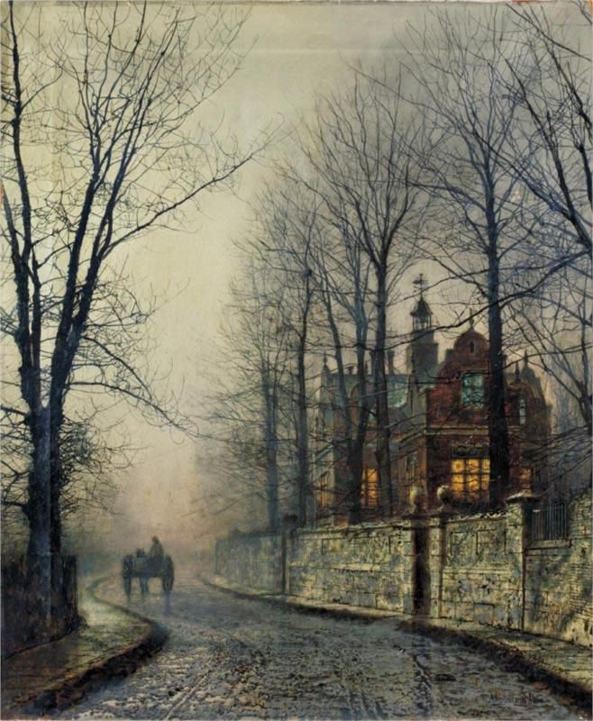

Fantasy Faction Monthly Writing Contest Anthology, January 2016
One of the many times Deadpool breaks the fourth wall.
I think most of you are familiar with the term "breaking the fourth wall". It's mostly done in children's books (like Grover in Sesame Street's 'The Monster at the End of this Book'), comics (see above) or movies (comedy movies mainly) and means usually a character becoming aware of their fictional nature, directly addressing the reader and/or interacting with their creator.
While it's often done in a comedic way, it's possible to do it in a tragic way too (the main character is questioning his existence for example).
I think it is pretty hard to pull this off in a fantasy story (SF is probably a bit easier) and I haven't seen it done in a short story before, so I'm excited to see what you can come up with.
Here are some examples:
Dingo: " Oh, wicked, bad, naughty, evil Zoot! She is a bad person and must pay the penalty... Do you think this scene should have been cut? We were so worried when the boys were writing it, but now, we're glad. It's better than some of the previous scenes, I think.. ." (Monty Python's Holy Grail)
“ You don't know about me without you have read a book by the name of The Adventures of Tom Sawyer; but that ain't no matter. ” (Mark Twain, Adventures of Huckleberry Finn)
Help me. Please. I’ll explain later. Just stop me falling. Lift me in your mind’s eye. Please. Hold me here above the lake.
That’s better. I can hear my thoughts over the wind. Thank you. Let me catch my breath.
Have you ever jumped off a cliff? I hadn’t until a few moments ago. You weren’t here yet of course. It was imperative we meet as late as possible, although that was cutting a bit fine.
I’d sought out the highest of the peaks that devour these blue waters. The tallest tooth in these jagged jaws. Its sheer sides were not easily conquered, oh no. These fangs look soft, with trees clinging to their limestone sides, but that is a lie. They are cliffs that do not want to be climbed. Of course, you’ve just seen how easy coming down was by comparison. At least, it was after I took that jump.
I doubt there are words to convey the terror of that leap. Perhaps there are some for the effort it took to force my weak legs to run. Maybe even for the scream I gave when I passed into empty freedom. But I cannot tell you faithfully about the panic as the lusty, formless grip of the earth took hold. I doubted myself, I doubted you. I doubted the poor souls whose ends I have witnessed. Gods, my spirit was hammered to a flat knife in those seconds.
I’m rambling a bit aren’t I? Sorry. My heart has slowed to a racehorse gallop. Let’s get on with this. How high am I over the surface? I need to be close enough to see beneath the calm waters.
No, higher. Take me high enough to see the opposite edge of the crater. It will make our search quicker and time is running out. I can’t tell you what we’re looking for. You’ll know it when I see it. That is all it is safe to tell you right now. My past is as closed as the box strapped at my back. If you need a reason then suffice to say that I have people I love, and had our time together been longer you too would have loved them. They are not perfect, some of their mistakes would have made you wince. Some of their loss would have driven spikes into your chest. Or maybe only needled at your heart. I can't say which, you are just as unknown to me as I to you. But they need us. Both of us.
There, near the western end, in the chill of the afternoon shadows. That light beneath the surface. Take me there.
Ha! That rattled my teeth. He doesn’t stand a chance, not with you on my side. See how the water obscures the flames? This sunken, burning sphere is what we seek. I’ve read about it, but it shifts faster and more fiercely than I’d imagined. Is that your doing, or his? No matter. It is time to see if this mad plan will afford us some chance. We must smash down. Yes, though the water. Do not stop for the impossible fires. Think me immune and we can crash through.
There. On his throne, in this chamber of cold flames. There he is. At least he looks surprised, that’s a start. I swing the box over my head and into my hands.
“Now this is a surprise. You aren’t even supposed to be able to find me without your rider.”
He stands, all sinew and smiles, then moves forward like a marionette dancing from an old man’s hands.
“Oh. But you do have one. I hadn’t noticed. How wonderful. Usually I have had an entire tale to learn about you. That can get very tedious you know. Yes, I am talking to you.”
His jerking walk stops, keeping him out of my reach. I flip the catches on the case.
“Mmmm. The box. Very clever. Without your story I can’t see what’s in it. It won’t matter though. I can see your rider clearer now. Astonishing. What is it? Some kind of glowing glass with characters trapped beneath.”
The box clatters and I thrust the spring loaded pipe forward like an accusation. I jab the release before he can step aside and the spike flies, spearing his black shoulder.
“Ow. Ow. Ow. Fucking Ow. But you missed you know. I had just enough warning there.”
He’s right, all I can do now is fight with the empty staff.
“Well, yes. It does seem that way doesn’t it? But you know, you could just give up and die. It’s going to happen anyway.”
I will not surrender. I will never give over my world to…
“No. Of course you won’t. Your sort never does. Round of applause though.” He steps back, clapping slowly. “You’re the first one to injure me in a dozen tales. Very crafty. But let’s talk about your rider’s world shall we? It’s infinitely more interesting than yours you know.”
I strike with all the speed the monk’s training has instilled. Faster even than the masters themselves. He side steps me like I'm an angry infant.
“They seem to be using symbols for phonemes in some way, not your crude pictograms. I haven’t seen this sort of thing for a while. Let’s begin with one of the common ones, see what that gets us eh?”
As f he faces no opponent he stares over my shoulder ndfferently. The fres around us swrl. What s ths?
Staff hgh I charge agan, but he seems even stronger, even qucker.
“Oh, I am. As your tale is devoured I grow stronger. You world is mine now manchild. Let me see. These look tasty.”
Red flmes flre to blue, blnding me for second. My strength s ebbng from me. My knees begn to buckle. I slp the knfe from my sleeve, hdden n my plm.
“Oh come now.” He jerks the short blde free of hs shoulder nd dmonshes me lke chld. “Surely you understand by now? No? Fine, I was going to take my time over this but if you two insist.”
I thow th dggr bt t slws n th r, s f thrwn thrgh wt nd. Th r grws thn rnd m nd th lghts grw brght.
“Are we done?”
I cnnt fl. I mst nt fl.
“And yet you have. Allow me to put you out of your misery.”
N pls. n.
“And done. Delicious. But so short. Still, this has been a most diverting chapter. It’s not often you can surprise me. You realise that I hope? He was clever not to awaken his rider too soon, but it still didn’t save him or you. I’m here now. The breath on your neck. The flicker at the edge of your vision. As soon as your adventure begins I will see your rider as clearly as I see you and then your world will be mine. Theirs is a mirror facing yours as his was a mirror facing the one before, only I stand between. Reflected forever. Eternal.
By all means, let your tale begin!”
Elle
I didn’t realise I had depression until I killed myself, didn’t see it coming which is stupid really as I died by my own hands.
But it’s not all doom and gloom as I got to be a ghost. Which is pretty epic, I don’t have to worry about how much I weigh, how big my spots are. I can’t remember what I looked like which is amazing. I can remember that I had long black hair which was not greasy or frizzy.
Being a ghost has made me famous. People come from all over to pay their respects to me, some pin handwritten poems on my tree. The little area of woodland tucked inside the suburbs of Greenham where I died is now named after me; Elle’s Wood. You won’t find it on any map, it’s not official but everyone who lives here calls it that.
I suppose you’re just dying to know what it’s like to live like a ghost. It’s not as glamourous as it sounds and does take a bit of getting used to. You’re suddenly freed from having to eat, staying warm and the weirdest of them all; not needing to sleep. What doesn’t change is wondering what will happen to me when I die? At most I’m only half dead and I want to know where everyone else goes. I want to find them wherever there are but I can’t do that until the wrongs have been righted.
A lot of people, particularly the Celts, call it the otherworld and I would say that’s fairly accurate. It’s like living in another world adjacent to yours. Except this world is nothing like yours. All the colours have seeped out and are indistinguishable other than being light, dark and something in between.
I can’t always see directly into your world, I can’t see things other than rough shapes. It feels like being in a different room. I can hear muffled voices and am often aware of a presence but unless it’s Halloween or the anniversary of my death I can’t lift the veil so to speak and step in.
That’s why Halloween is my favourite time of the year when I can briefly return. Halloween used to be called Samhain, it’s a festival where the ancients honoured the thinning of the veil between the worlds and dead ancestors were worshipped and honoured. Although people just think of Halloween as being spooky and going around knocking on doors for sweets, we all still honour the dead we just don’t realise we’re doing it.
Sometimes I like to sit amongst the various groups of kids who come to my woods to light candles and listen to music. I’ve been dead for quite some time now, long enough to not recognise anything they play. They dress strange too not like how it was in my day.
But mostly when I return it is to visit the four girls who bullied me for kicks. Only one, Laura, has stayed in Greenham and it irks me as I didn’t know what happened to them. I think that’s one of the reasons why I can’t move on. I still know their names, when you die your memories are among the first things to go but I can still remember mine.
Being a ghost is great; it’s like being a celebrity. There have been TV crews out here trying to catch a glimpse of the famous ghost of Elle Swift.
Obviously you must have heard how I died that I hung myself during History at school but you’re still asking why. That’s not an easy question to answer because after all these years I’m still asking myself the same question. Why?
I always knew I was different to everyone and until I got to secondary school I was fine with that and so was everyone else. But suddenly there was this idea of being cool; fitting in the worst thing in the world was to be a billy no mates. That soon became me suddenly my eccentricities were viewed with the same suspicions as a deadly contagious virus people avoided me at all costs in case I befriended them. Fear turned to hatred turned to bullying. I only had three months left at school at the time it seemed like such a long time. Well it would be when you’re only 15 years old.
In the end it got too much I was just so tired. I wouldn’t call it being physically tired but a slow deterioration where even just being alive was too hard. I didn’t want to die I just wanted to stop feeling and have a really really long break.
Is that a good enough answer for you? Is that why you came? Does it make you happy that I’m in a better place now? I love my new world I’ve built it just for myself. Except there’s one slight niggling problem; every hero needs their arch enemy, an antagonist for the protagonist.
Have you guessed what it is I’m planning? Look there she comes. Curiosity made her come here tonight. I haven’t seen her in years but underneath all the lines on your face I still know it’s her; Laura Blackmore. It’s the first time she’s come to say sorry, it will be her last.
I’ve never had a friend but I’ve wanted one. She’s standing there so scared that I just had to come out and say hello. I don’t think she was truly expecting it and turned to run except she tripped and cracked her head against a very conveniently sharp rock. I clapped my hands to see her bleed out it was the first colour I’d seen since I died. Before she has a chance to escape I pull her close. Now we can be friends forever.
I can still see you watching Hayley; you always were one step behind Laura at school. Joining in with making me feel worthless. I guess I’ll see you next Halloween.
Sponge Riot
Larabeth had only been watching Matlock in the asylum cafeteria for twelve words, and already she was bored. Matlock was a show for old people, one of many stereotypes authors stole for a cheap laugh. Unfortunately for her, old lunatics outnumbered the young ones by a decent margin.
Hoping for something else to entertain her, Larabeth glanced around the cafeteria at the other patients. Bobby the Patriot was rapping Morse code on the table with shifty eyes, probably hoping to pass a message regarding national security to his CIA contact. Janitor Morrow was in the process of cleaning up a giant mess of spilled pasta chunks in the corner, smashing his mop into the goop with gritted teeth.
About five minutes ago, Ronald McDonald (or "the Ron" as they all called him) had taken umbrage to food he considered off the menu, and thrown the plate of pasta as far as it could go. He'd come to the asylum a year ago, tucked away for insisting he was the actual Ronald McDonald, and repeatedly coming after McDonalds' executives claiming they had stolen his likeness to sell greasy burgers.
Because it was now 193 words into the story and nothing really interesting had happened yet (which was way too long to interest a literary agent in anything) Larabeth sucked down another Jello square and decided to start a riot. That would be interesting, and besides, she needed to get out of here before the story ended. To do that, she'd first have to get her belongings back from the asylum's main office.
"Hey Leslie?" Larabeth glanced at the dark-haired woman sitting next to her, idly spinning a block of wood with no sharp corners. "Feel like starting a riot?"
"Naw," Leslie said. "It's Friday night." Leslie was only here because she thought people were actually automatons driven by tiny hamsters. "Never a good idea to riot on a Friday night."
"Why not?"
"Not enough letters in in it," Leslie said. "Wednesday is much safer."
Larabeth could see the logic in that. "Unfortunately, I don't think this story is going to run until next Wednesday."
Larabeth searched the room for someone who might be pliable. Janitor Morrow had finished with the bulk of the Ron's pasta tantrum and was now scrubbing along the baseboards with a ratty, discolored sponge.
The sponge! If anyone at Happy Home was dissatisfied with their existence in this place, it would be the sponges. People were constantly rubbing them in nasty things, and twisting them dozens of times, and wringing them out, and leaving them to grow mold in cold metal sinks. No one would enjoy that.
Larabeth hopped up and walked over to Janitor Morrow. "Hey, Mister Morrow?"
He glanced at her with a wary smile. "Yes?"
"Do you mind if I talk to your sponge for a moment?"
As the janitor at an insane asylum, Morrow had heard far stranger questions. Now done with his cleanup, he shrugged, tossed the ratty, sauce covered sponge to her, and said "Knock yourself out, kid."
"Thanks!" Larabeth beamed at him, and he smiled a bit more.
Larabeth carried the sponge over a quiet corner, where they could talk without being overheard. She checked the wordcount just to make sure she still had time to reach the office. Yup. 931 words left. She set the sponge down and greeted it. "Hello, sponge!"
The sponge waited.
"Do you like having your face scrubbed in messy pasta? In apple juice?"
The sponge didn't like anything, since it was a sponge.
"Oh, right." Larabeth considered for a moment. What she really needed was for this story's author to change the rules of the world so that sponges could talk. And be sentinent.
"Ack!" said the sponge.
"Oh?" Larabeth said.
"What am I? Who am I?" The sponge sounded a bit freaked out by its sudden self-awareness.
"You're a sponge!" Larabeth exclaimed. "People rub you in yucky stuff and use you to clean scummy toilets."
"Ew!" the sponge shouted.
"I know," Larabeth agreed. "Want to do something about it?"
"But what can I do?" the sponge said. "I'm just a sponge!"
"Well, you can petition the asylum for better treatment. Or, you know," Larabeth said casually. "You could riot."
"Riot?" the sponge asked.
"Well, you'd need to be able to move around first," Larabeth said, scratching her head as she considered further changes to the story's rules. "And since you're so small, you'd probably need superstrength. I think automonous, mobile, super strong sponges who don't like having their faces rubbed in yuck would have a strong incentive to riot."
"Really?" the sponge asked eagerly.
"Oh yeah," Larabeth said. "You'd also be very good at it."
"Now hear this!" the sponge shouted, startling everyone sitting in the cafeteria except for Leslie, who had probably known Larabeth was going to instigate something like this. "We're done cleaning up your messes!"
"Yeah!" Larabeth added.
"We want equal pay!" the sponge added. "And no more throwing us in trash cans!"
"And no more scalding water!" more sponges yelled. There were clatters from across the asylum as sentient, super strong mobile sponges sprang from their perches and smashed their way through all the doors blocking them from the cafeteria.
"Sponge rights!" the lead sponge shouted. "Sponge rights sponge rights sponge rights!"
As the other sponges joined in and Janitor Morrow pulled the panic alarm, the cafeteria exploded into chaos. Men and women in loose white clothing went running everywhere, and Larabeth used the commotion to dash through the now sponge-smashed door and run for the asylum office.
It was empty - this late, only the orderlies were actually on duty - but the door was locked. Fortunately, a sponge was busy smashing a cabinet inside. Larabeth called to it. "Hey, sponge!"
"Yes?" it said, stopping in its cabinet smashing.
"Could you get this door open for me?"
"Sure!" the sponge shouted, and bashed the door right open.
Larabeth tossed it a salute and walked past the office to the intake room, which was fortunately unlocked. She rifled through the lockers until she found the belongings they'd taken from her when she had herself committed - a golden locket, a wooden stick that was vaguely wand shaped, and a small leather bag about big enough to hold a roll of quarters or a single square of SPAM.
Pocketing the items, she jogged back to the cafeteria to find that the former patients were now all happily huddled in one corner, watching Matlock with a few sponges, and the rest of the sponges had herded all the orderlies into another. All in all, it looked like the sponges were running the asylum. Larabeth was fairly certain that had not happened in any other story ever. So far as she knew.
"Hey everyone!" Larabeth shouted, catching their attention. "You can all stop rioting now! I got what I needed!"
"Well, we haven't!" a sponge shouted. "We still want to be taken seriously!"
"Yeah!" the other sponges chimed in. "And no more sponge baths!"
"Eww!" the others all shouted in unison.
"Hmm." Larabeth tapped her chin. "Maybe this wasn't such a good idea after all. I probably should have suggested something less drastic."
"What?" a confused orderly asked.
"Not an issue," Larabeth amended. "Tell you what, sponges. If you promise to let all the orderlies and inmates go back to what they were doing before the riot, I promise none of you will be forced to do anything you don't want to do for as long as you continue to exist."
"To exist?" a sponge said.
"That sounds ominous," another added.
"It's not so bad," Larabeth said. "Why don't we all sit down and watch the end of Matlock together?"
Moved by her words for some reason not readily apparent to any of them, the sponges agreed and took seats alongside those asylum patients who had not fled during the riot. Once everyone was settled down and comfortable, Janitor Morrow walked over to her.
"Larabeth?"
She smiled at him. "Yes, Mister Morrow?"
"What did you mean when you told the sponges 'as long as you continue to exist?'"
"Oh!" Larabeth tried to think back. "Honestly? I don't remember."
"Right," said Morrow. "So … are they going to riot again?"
Larabeth checked the word count. "Nope! There's only 90 words left before the end of this story."
"What does that mean?" Morrow asked.
"Nothing important," Larabeth said. "Anyway, I don't have to go now. They don't need me over in the Fantasy-Faction RPG forum."
"What's that?" Morrow asked.
"Not sure!" Larabeth eagerly rubbed her golden medallion. "Nice talking to you, Morrow!"
"Right?" Morrow said. He blinked as Larabeth vanished in a poof of smoke.
"Hey." A sponge sidled over. "Do you think she was serious about that 90 words thing?"
"Honestly?" Morrow frowned. "I don't know what she meant."
THE END
Not Some Smile-Wielding Bandit

Zebbulin Manor was like no other, not any in the West for that matter. Ivy crawled up alongside its ivory glint, and pristine brickwork was a marvel in and of itself. Old Town was renowned for its architecture, and the oil baron of Lebokant left no doubt to that. His house was one of maybe half a dozen on the northeastern side of the city, huddled up in the brush and thicket close to the bogs farther by the river, but the land was beautiful, let me tell you. I trudged on down the cobbles left of his house and made my way to the entrance.
“You sure about this?”
Markov was by my side, Mister Asylum, the former head of operations in Lebokant, but now my second in command. If you needed to disappear, he was your man. Loyal as a lap dog, fresh on my heels forever, that’s why we had kept him after the takeover, not solely because of that stupid smirk that rode his visage. But he had a jitter in his hands, a man not used to getting them dirty, and that’s exactly why I had asked him to follow.
Boots stopped at the wrought-iron gate, and I gave him a once over. “Have I ever given you reason to doubt me?” He shook his head and glanced on down the empty boulevard. That was said primarily to ease your worries, though, dear listener. “That’s what I thought. Now look sharp. We’ve got company.”
Out of the watchtower strolled some Argyrian tailored to his starched suit, a new one if you ask me. Never seen a single stone-born running in anything other than beaten up garments, but Lord Zebbulin was a man of wealth and taste. He molded society around him and stereotypes be damned, especially in this city.
“You Mister Grayson?” His speech was thicker than him.
“Indeed I am, and this is my servant, Markov.”
The young man tipped his bowler. “A pleasure.”
The brute grunted confirmation and swung open the gate a second later. He turned around ever so slowly, looked over his shoulder. “Follow me.” Least the racial taciturnity was not lost on this individual. I motioned for Markov to calm down, what with the glare I was giving him more than enough reason to worry, and made haste to the inner foyer of our acquaintance.
I had been to Zebbulin Manor three times already and only two of those had been on invitation. They had given me enough room for comfort, enough to let me know that the servant’s quarters were understaffed since last month’s visit, but the gild on the outside was masking a rot further in. Time was running out for your wish, and thank the Almighty that the butler knew how to hurry.
“Shall I take your coats?” he offered at the front door, both hands outstretched, slowly.
I waved him off. “We won’t be that long, don’t you worry.”
Man didn’t know how to take it, dumb look as if he had never been told no, but that didn’t stop me. “Okay.” He walked further past the copper bust of Saint Cecilia, on through acrylic adorned hallways to the dining room. I leveled my eye on him.
“Where’s the master of the house?”
Markov was getting twitchy again, fiddling with his cravat. “He has business with another man,” was all I received from the guy. “I’ll go check on Lord Zebbulin.”
“I’ll go with you.” I’m not sure if he was slow or stupid, but there was a protest on the cusp of his lips; I could see it. I shot that down swiftly and started straight toward the grand staircase. “Unless you want to wait here?”
He didn’t know what to say, his first smart move of the morning. Markov was already past him just as I had crested the tiered mountain.
“Left or right?”
Argyrian grunted again and pulled his head to the right. Good enough for me.
I had the courtesy to wait for him, however. A very flustered lad had stepped out of the nearby vestibule, a scandal in his wake as he made some halfhearted attempt to button up his trousers. Lord Zebbulin was nowhere to be seen, and I’ll chalk that intelligence up to another hurdle. It was no sin I didn’t know about, unfortunately. I let him by without a word.
“He’s right here,” the butler puffed while he walked past us. Giant made it to the door just as his master had stepped out.
“Ah, you’re here. Come, come on in. Was finishing up some business with Mister Fountain, that was all. Please, follow me.”
Not a hair misplaced and his coat tight as that smile, I stepped after him. Custom allowed me to close the door, seeing as I was the guest, and I did. “Markov, wait outside.”
He nodded obedience by the brute. “Yes sir.”
I entered the beast’s den. It was unremarkable, if you ask me. Standard blackthorn desk matching dark stained bookshelves, empty of knowledge, and a window parallel to the door allowed plenty of visible light inside. Saw a flicker in the treetops as he uncorked a bottle of scotch. “You a Bourait kind of fellow, Mister Grayson?”
“Don’t care much for alcohol,” I muttered. He poured the second glass nonetheless.
“More for me, then,” he chuckled, a deep, throaty growl that made my hands slide into each pocket. “Now, what brings you to my humble abode on such a fine autumn morning? I take it you’re not here on a personal visit, hmm.” That thin lipped grin belied many a-things, but I did nothing of the such.
“You know why I’m here. Woulfe’s unhappy with your performance lately.” I rolled my shoulders, and he took another swig. “He’s hearing things. Unbecoming things, understand? You’ve got gambling debts, and you don’t pay your own. Not all of it, that’s for sure.”
He poured another finger. Saw a minute tremor, but that vanished quick. “You listen here, youngster. Times’ve been tough, I tell you. I’ve had to make my way into other fields, yes, but make no mistake, I climbed my way to the top by my own two feet.”
“I thought nothing to the contrary.” Woulfe might, however.
“Good, because you’re treading on thin ice, Mister. Woulfe sends some lackey into my house, my home, and thinks he can shake me down for more coin? Hah!” He swallowed from the bottle this instance, and I withdrew my hands in case he got to thinking creative. Didn’t like the tone he was reaching for, either. This had went sour quickly, and I had to remedy that. “Now what do you want? You want to run back to daddy? You have no power here, gent.”
I raised both eyebrows. “No power, hmm? No, power is being able to unload your safe for all its contents without raising a finger.” He went for another swallow to finish off the trembles, one forehead vessel bulging a silent scream.
“And how do you plan on doing that?”
His window pane shattered the next second, and his bottle of scotch along with it. He groped at his mangled hand afterward, but regained his senses and dove behind the desk, profanity his only comfort. When he saw that I had made no move in shock or argument, his back straightened.
“That’s how. Now, I don’t fancy myself a smart man, but your butler’s some ugly son of a bitch. You hear anything?” I sure didn’t. “As far as I can tell, there’s you, Markov, a mid-drawer pistol, and me.” I patted the bulge in my coat pocket for emphasis. “And I sure as hell ain’t here to help.”
“What do you want?” His hand bled a shake, but his face was bloodless.
“What do I want? I want nothing but your cooperation. My friend outside with the carbine, though? He wants the contents of your safe. I’d listen to him if I were you.” I took a step toward the counter. “We’ve got a carriage out front. Like you to put it on there iff’n you don’t mind.”
That terror in each pupil gave no reason to think otherwise.
The lass leaned back in her chair. Bar was quiet. “I’d kill him after things were all said and done, but that’s how’d I go about it,” I told the client. Pulled out my tin and rummaged around for a fix. Bit down on satisfaction. “You follow?”
She did. “You sure you can’t do this for me?”
“No amount of money would get me that close to the Zebbulin’s. Besides, I’m a consulting criminal, not some smile-wielding bandit. This is your debt, not mine.” I chewed on the warmberry, gulped down steel wool, but it was like wool on my heart and head. Felt good. “You can do this. Maybe.”
“Maybe,” she nodded. “Thanks.”
I went for another pick of the tin. Popped it in my mouth. “No problem.”
SKELETON WALKS INTO A BAR
Things you'll need: A No. 2 pencil, a piece of scratch paper, a six-sided die, a glass of your usual
Section 1: Introducing Our Hero
Section 2: Yes, but Byron had talent
Section A: A wager
Section B: There's always a woman
Section C: Them dry bones
Section D: Lady Noir
Section E: Groundhog Day
Section F: At least they agree on one thing
The End
Skeleton wandered into the Lucky Seven at the ass-end of the Vegas strip and threaded his way through the press of priests, rabbis and mullahs. Pat behind the bar glanced up from wiping dirt around a pint glass and reached under the bar for the usual. "The usual?"
"The usual," said Skeleton. The conclave of clergy pulled back, some form of prophecy at work, as the usual poured past Skeleton's jaw, splashed his ribs, and watered the sawdust floor.
Continue to Section 2
Skeleton wanted to cry. He stood in a pose of poetic despair, something he felt he had every right to.
"Do you need another, boyo?" asked Pat
Skeleton here, boys and girls! Here's your chance to make your own adventure.
Choose Skeleton's next action and see where the story leads!
Does Skeleton:
A. Take another drink of the usual?
B. Ignore Pat's offer and hope for... something?
If you chose A, go to section A.
If you chose B, go to section B.
"Another," said Skeleton, with predictable results.
A priest, a rabbi and a mullah processed to the bar and looked at Skeleton shyly. "Friend," said the rabbi (here translated from the Yiddish). "My fellow ministers and I were hoping a wager you could settle." Skeleton gave them a fish-eye look, but the little woman went on without noticing. "You see, we Jews, if you can even speak about 'we', really, scripture being what it is and subject to so many interpretations, say that when we die, the soul waits for the coming of the messiah. The priest here believes that the soul enters purgatory to be cleansed of its sins. And the mullah holds that humans and djinn will be judged on the last day and lie quietly in their graves until that time." The rabbi paused.
"Yes?" said Skeleton.
"We were thinking you could solve the question, my son," said the priest.
Does Skeleton ignore the clergy? If so, go back to section 2
If not, go to section C
"No, thank you, Pat," sighed Skeleton. He put his spine to the bar and stared out at the room. His sockets were drawn to a woman sitting alone at a banquette in the far corner. "What's she having?"
"You don't want to go there, friend" said the barkeep. "That one's trouble." Skeleton turned a fisheye on him, but Pat didn't notice. "All right, but it's your funeral." Pat handed over two pours of a different usual and Skeleton walked them through the crowd. The woman leveled him a look that would have stripped the skin off any other man.
"Buzz off, Bones," she said. Her voice was like ashes scraped from a house fire.
Does Skeleton turned around and go back to the bar? If so, go to section 2
If he shows some backbone, go to section D
"What, just because I'm a skeleton, you think I know what happens when you die? Isn't that your job? Maybe I'm not a living leftover. Maybe I was a science project, or a medical school prop."
"Were you?" asked the mullah.
"No. But I might have been." Skeleton stared into his empty glass, then tipped it meaningfully at the priest. The cleric motioned to Pat, who set up another round. "Yeah, I was alive."
"We knew it!" exclaimed the rabbi. "Were you in Elijah's valley?"
"I don't even know what that is," said Skeleton. "But here's the thing, folks. I have no idea how I got here. One minute I'm walking across the street, the next I'm, you know... this."
"No messiah?"
"No purgatory?"
"No djinn?"
"No dice." Skeleton raised his glass to the three. "I have no idea where I'm going, and I have no idea what I'm here for."
The clergy exchanged looks. "Oh, my child," said the priest. "We know why you're here."
If you think Skeleton should walk out before he gets an earful about benevolent Gods and the value of suffering, go to section E.
If you think Skeleton should stay and listen, go to section F.
Skeleton slid in next to the fatal femme. He set his bones vibrating and soon produced a very satisfactory buzz. The woman looked confused for a moment, then her expression cleared and a hint of laughter crept into the corners of her eyes. She took her usual from Skeleton's outstretched digits and tipped a sketchy salute.
"What's your name, Bones?" she said in that awful, wonderful voice. "I can't just call you Bones, now can I, if we're going to be friends? Or Buzz. I could call you that, but then I'd think I was some astronaut groupie."
******
Skeleton here again, girls and boys. Take out your pencil and scrap paper, because this is your chance to help out. Can you think of a great name for me? Write it down. From now on, each time you see the words 'mortal remains" or the abbreviation "Mr.", just substitute the name you chose for me! OK? On with the story.
******
"Maybe I was an astronaut in my former life."
"Were you, Bones?"
"No."
"So?"
"Mortal remains. At least that's what the doc wrote on the birth certificate, next to 'father unknown'."
"Mr, huh? Well, it could be worse. Want to get out of this dump, Mr?" Her eyes were dark pools of bitter humor. Every meta sentence seemed to be parsed from a lexicon of rubbish people say to each other when they know connection is something unachievable and unwanted.
"Sure," said Mr. He took a long look at what he could see of her, knowing what was coming next.
"Hey, you wait here for minute while I go powder my nose. Pick up the tab, would you?" She patted his carpals, slipped away from the table, and disappeared into the shadows at the back of the Lucky Seven. Is it my breath? thought Mr. He let his name drift away and made his way back to the bar.
Go to section 2
Skeleton stood on the sidewalk outside the Lucky Seven and tried to think of a better place to be. After a few hours of this, he stepped off the sidewalk and into the street. There was another bar across the street, and he thought he'd give it a try.
He wasn't surprised when he looked up and saw the all-too familiar marquee of the Lucky Seven over his head. Oh well, he thought, and went in.
Go to Section A
"Oh, yeah?" said Skeleton, "That's more than I know."
"Struggle," said the three heavenly representatives in unison.
"That's the bones of it," continued the mullah with a chuckle.
"Haha," said Skeleton. He found he was getting angry, and it felt good. He rounded on the three of them. Red coals burned in his eye sockets, and they took a step back. "That's just not good enough. Where's fun? Where's love? Where's change? Where's impact?"
"That's all there, too," said the rabbi. "But it doesn't mean anything without struggle."
"What shite," said Skeleton.
"OK, how about sacrifice?" asked the priest. "God sacrificed himself for us."
"Um," said the mullah and rabbi.
"Really?" Skeleton was already tired. "And how do you know God is a he? What if God is a squirrel, or a dog-headed woman? How do you know that you know anything?"
"I believe," said the priest. "We all do." Her colleagues nodded.
Now Skeleton was just confused. "How do you pull that off? And if you believe, why did you ask me what happens after death?"
"We believe," said the rabbi, kindly. "But that doesn't mean we're exactly certain." She let that sink in, and the four turned their thoughts inward.
"Another usual?" asked Pat.
Go to Section B
2
Spoiler for Hiden:
Skeleton found himself in a dungeon. A first level fighter stood over him, whooping with adrenaline and yelling: "Can I roll for treasure now? Can I?"
Skeleton found himself in a dungeon. A first level fighter stood over him, whooping with adrenaline and yelling: "Can I roll for treasure now? Can I?"
3
Spoiler for Hiden:
Skeleton found himself hanging from a hook. A medical student was droning on and on. Skeleton found himself desperately hoping for the bell to ring.
Skeleton found himself hanging from a hook. A medical student was droning on and on. Skeleton found himself desperately hoping for the bell to ring.
4
Spoiler for Hiden:
Skeleton found himself reduced to ash and bits and contemplating the view from the mantelpiece. He hoped there wasn't a cat.
Skeleton found himself reduced to ash and bits and contemplating the view from the mantelpiece. He hoped there wasn't a cat.
5
Spoiler for Hiden:
Skeletor found he was wearing purple and carrying a great big sword. "Flogg?" he said. "Here master."
Skeletor found he was wearing purple and carrying a great big sword. "Flogg?" he said. "Here master."
6
Spoiler for Hiden:
Skeleton found he was on a roof in the grey night, forcing out words while he breathed his last. "I've seen things you people wouldn't believe. Attack ships on fire off the shoulder of Orion. I watched C-beams glitter in the dark near the Tannhäuser Gate. All those moments will be lost in time, like tears...in...rain."
Skeleton found he was on a roof in the grey night, forcing out words while he breathed his last. "I've seen things you people wouldn't believe. Attack ships on fire off the shoulder of Orion. I watched C-beams glitter in the dark near the Tannhäuser Gate. All those moments will be lost in time, like tears...in...rain."
7
Spoiler for Hiden:
Skeleton walked into a bar.
Skeleton walked into a bar.
Spoiler for Hiden:
Skeleton gazed around at the universe and all that's in it. "Wow" was all he could say.
Skeleton gazed around at the universe and all that's in it. "Wow" was all he could say.
Kendrick
The alarm screeched and red lights flashed all around the barracks. Kendrick sat up in his bunk, flopped over the side and stumbled toward the kill switch for the alarm. It shut up, but the lights still swirled through his eyelids.
You couldn’t let me wake fully rested? Not once?
“Listen, whoever you are. While I'm thankful you are interested in my story, I'm just exhausted, you know?” He said, still clutching his ears. “I know you’re all, ‘I love stories,’ and ‘I can’t wait to see if this one is any good,’ but seriously, I nearly died this time.” Kendrick waited a moment then opened an eye. He sighed. “No, really, he threw me off a cliff after a chase scene with some troll.” He stood, stretching. “Like I would have to jump off a damn cliff. I’m the deadliest fighter in any of his stories. I mean, have you seen me? Hercules would be jealous.”
He exhaled. “Fine, let’s do this.” Kendrick walked to his closet and dressed in his good trousers. Of course they were damp and covered in filth, but they fit like a glove. He stared at the scars on his stomach, one line of scarring winding its way up his muscled chest and around one shoulder ruining his favorite tattoo. He fought a bearded fang-gorilla a few drafts ago, but it ended up in the recycling bin. Damn good fight scene too, and all he had to show for it were the scars.
The shirt was tan broadcloth, fitted to accentuate his thick arms and ripped in several places. It was damp, too. The tall black boots he had stolen from Bernabis the Pirate. He didn’t go by Kendrick at the time, as that was years ago in slush-pile fodder and he had changed much since then, but he was glad he had taken them now. They kept his feet dry. One thing you really didn’t need was wet feet. The story would be over before it started.
His foot squashed as he slid the first boot on. “Son of a bitch!”
Grumbling, he slid on the other boot and felt the soggy bottom soak his toes. “Comfort, that’s all I’m asking for here.” He slung a short sword over his back, stowed four daggers, then strapped on his tattered pack that contained some soggy meat, a flask of rum, and…
Kendrick studied a small black pouch carrying six diamonds the size of grapes.
That was new. What madness have you thought of now?
He huffed, strolling to the mirror and studying himself. He looked rugged. Dangerous. He could have killed that troll in three moves. “Jump off a cliff my ass.”
The corridor was lit with torches every dozen feet, keeping the hallway in a mix of light and shadow. He stopped before a door at the end made of solid wood from top to bottom. Once he entered the actual story, he would have to roll with the punches. Not that he really had a choice anyway. A long breath steadied him. He unlatched the iron bolt and tugged the heavy door open. Daylight rushed in, but it wasn’t blinding. He stepped outside into a forest. Birds were singing and the wind blew around him. It seemed like a familiar area. He knew if he turned around the barracks would be gone, so he didn’t. The story wrapped itself into his narrative mind.
He was a treasure hunter. Ugh, really?
The job was to steal magical diamonds. He tapped his pack. Check.
The diamonds belonged to the Highland Tribesmen, known for their spells and magical weaponry. They were also known for their guardian trolls, jagged-toothed hairy monstrosities that carried swords the size of a man.
“And let me guess,” he said, taking in his soaking attire, “I jumped off a cliff into a river in my escape?” Kendrick rolled his eyes. That is out of character. I fight, dammit!
A roar echoed in the distance. That didn’t sound like a troll he had heard before.
Kendrick marked the sun’s location. It was late in the evening. He had fought off several of the Highland Tribesman in their escape. Well, that’s better. Their? Right, his crew. They would be waiting at the getaway boat by now. The Highland Tribesmen were native to an island in the Unmarked Sea. Of course they were. Let me guess, once I reach the boat and we sail off into the open water, the boat sinks? Maybe I will finally get to use my sword against an army of hammerheads?
He chuckled. Now that would be one hell of a story! Kendrick knew they didn’t have time for that. Not this nugget of a story, anyway. Fifteen-hundred words comes fast, doesn’t it boss?
The roar came again, but it was much closer this time. It was time to accept his role.
Kendrick wiped the hair from his face then broke into a run. He needed to get out of the forest before dark. His crew wouldn’t wait forever and they had orders to sail out at nightfall, with or without the diamonds.
Hours passed slogging through the flooded inlands until he reached the coast. He fell to his knees on the sand, panting. He needed rest after that hike. It was more difficult than necessary, but he was used to it. He curled his lip then stood, walking toward his friends who had now spotted him.
Was that Merrel waiving? He really needed to ask her on a date. You hear me? Everyone likes a little romance! Gods, she was beautiful.
He caught himself smiling, and then the troll was there in front of him. Kendrick stopped, cursing. It had blue skin, this troll, thickly muscled and wore an animal pelt strapped around its back. That wasn’t the problem. Like he said, he could beat the troll, but now it rode on the back of a giant fang-gorilla.
He lifted his hands in the air. This is what you settled on? Obviously, Kendrick was about to run.
The fang-gorilla snarled, drool dripping from its teeth. With a hiss, the troll hefted its massive sword into the air and kicked the fang-gorilla into motion.
He had to run toward the sea, right? He couldn’t outrun a fang-gorilla in the forest, but maybe he could outswim it. He stood still, waiting. Where am I running to, wise one?
The troll and his steed were thirty yards away and closing fast.
Kendrick’s eyes grew wider.
Kendrick found his hands reaching for his knives. The realization made him laugh. “Now I get to fight?”
The fang-gorilla leaped at him, long front arm reaching for his body. Kendrick jumped into the air, rolling backward over its outstretched arm. He landed on his feet with enough time to duck the swinging sword of the troll. The troll pulled at the reins, then grimaced, glancing to his arm as the massive sword fell from his hands into the sand. A dagger protruded from his forearm.
The fang-gorilla limped, lifting one of its large hands to stare at the dagger wedged into its palm. They both looked shocked.
Kendrick was still laughing, almost to the point of taking a knee. Finally, he regained his composure, pointing a thumb to his chest. “Deadliest. Fighter. Ever.”
The troll shrieked and the fang-gorilla beat its chest with its good hand. They charged again.
What followed was a series of maneuvers that only a handful of beings could perform. Summersaults, dizzying footwork and hands faster and stronger than the heroes of old placed him onto the shoulders of the fang-gorilla behind the troll. He pulled his sword from the troll's back and let the body fall.
Flipping backward, he landed onto the sand, staring at the bloodied fang-gorilla. It turned, gargled, then fell face first into the sand.
His laughter returned. “Kendrick runs from nothing!”
“Kendrick?”
He spun to find Merrel standing behind him. She looked to the fang-gorilla, then to the troll, then back to him. “That was amazing.”
Kendrick coughed. “Th-thanks.”
Lort and Cherls stood just behind her, swords drawn. “By the gods,” Cherls said. “I ain’t never seen the like.”
“Ya still got them diamonds, ain’t ya?“ Lort said. Kendrick nodded. The old man smiled then let it fall away as he stared at the troll. “Right, to the boat before more of’em show up.” The two men turned back toward the boat.
“He’s right,” Merrel said. “Let’s hurry.”
Kendrick stowed his sword once again, then fell in next to her. They walked along the beach, the sea water reaching their feet with every other crash of the waves.
She grabbed his hand, holding it tight. “Where would we be without you, Kendrick? Where would I be? Thank you.” She leaned forward, kissing his cheek, then continued on down the beach.
His smiled widened. “I hope this makes it into the final draft.”
Merrel turned. “Hmm?”
He cleared his throat. “Nothing.”
Masterful
Help me.
I am so alone now.
Please.
The air from my window is raining ash and thick smoke, the skies burn a dark copper, smog’s of shimmering grey circle the world. The land tastes metallic now. It settles on the tongue in a sharp coat, scratches at your neck. It is hard to breathe.
It is all my fault, I wanted to destroy the world. Here is my victory, witness my glory on a dim emerald throne in an empty castle, a skeletal crown of burnt wood adorning my skull. Join me with the spiders and the roaches for company. The rats are not my friends, they keep me awake between my fits of restless sleeping, it is never night anymore, just an endless burning grey.
It is my fault I am alone. I took the power to defeat the armies, the heroes raiding my castle walls, travellers searching far to the caves and mountains, desperate to find a reality among the stories they’d been told. The hidden magic, weapons, gems, rings anything to stop me. But they couldn’t, it wasn’t real. But mine was. I destroyed the world. And everyone is dead now.
I win.
I’m waiting for my story now; the hero is out there, in the plains. I am worried I killed him again. The shadows from the bogs I conjured were the conclusion of the second act, a dramatic tragedy to the small band of plucky travellers. The final incentive to push on in the face of adversity, to destroy the evil (me) plaguing the land (a ruined land but even so).
I overestimated the Shadows of the Lost, they consumed the likable funny one but wounded the hero heavily…oh. I think he is waking, yes, I did not kill him yet. That is a relief, I did not want a messy ending, it would only confuse them.
Yes.
Here we are.
The story.
Rafe Silvergood spat blood down his chin as the white ash of the sky greeted him. His back was screaming in pain, leg tingling unpleasantly and feeling colder than it should do. He heard Snari’s muttered prayers in her own poetic tongue behind him. The voice in his head told him to fight on, the memories of the battle painting itself cruelly in his mind. Tomas’s last words descending into the echoes of the Shadows, his fingers clawing at nothing as if the air could offer him a final grip on his life.
Why? he had said, not scared or in pain, why? Disappointed, melancholic to his fate. A few witty lines and dry humour to the darkness they had faced together across the plains and mountains of the Lost Lands (that’s what I call it now, no one else has bothered to name it after all). His pale perplexed face, emptying of life and hope was carved into Rafe’s vision, every time he blinked it reappeared.
His friends were scattered around him in the bog, Lombard and Jin perched on a large rock, enjoying each other’s silent company. The giant Lombard was drained, his once shining dark skin dusty and pale, his deadly pointed ginger beard torn and patchy from the Shadows’ icy grip. Jin leaned against his enormous back, her round face lined with exhaustion, the familiar pair of bloody axes lying abandoned at her feet. Yala the dwarf sat sullen among the bog, head in thick hands, massaging her thin beard irritably.
“Ill’ra sa sin” he heard from behind, Snari’s lithe figure greeting him with a gentle hand resting on his shoulder.
“Are you alright?”
He struggled to create the words he replied with in his head, instead nodding sharply. As he examined Snari’s sharp face, her tattoos decorating the contours of her face bloody and marred, Rafe knew he had to rally them. He couldn’t be the one drained of his soul, lost and melancholy. He hardened his jaw.
“Now we kill him”
Snari’s hand gripped Rafe harder, her long fingers tensing into his muscles, resisting the urge to entwine his own with her he faced the others, his friends, he realised again. He had not considered them as such before now, with Tomas gone he was ashamed he had never told them.
“We kill him,” he said firmly, raising his voice to his companions, “together”
Yala choked back a sob and grabbed her hammer and shield from the watery depths, rising to greet him. She held out a muddy hand.
“Together”
The group drew around each other, clutching their fingers in an embrace, unified in death, in their quest to defeat evil. They knew what had to be done.
Kill me.
They’re on the way now, marching towards the foot of the castle walls, I can smell them. Finally, I have been alone for too long, I made this adventure even longer than their last. A mistake in hindsight. Next time will focus on brevity, something meatier.
I should prepare myself in the grand hall, awaiting my heroes.
“ZORAN”, (that’s me if you were wondering) Rafe cried into the corridors of the castle, the walls of the dead uninterested in his pleas, “MASTER ZORAN,” (I did not name myself, if I could ‘Zoran’ would not have been the chosen form, only a real unimaginative idiot lacking in taste and decorum could conjure such a mealy mouthed pseudonym).
“FACE ME” Rafe said again, voice strong and echoing among the dust of the ancient stones. The hero shuffled down the corridor, sword raised proudly, shimmering in its sharpness, black grip lined with gold shining beneath taught fingers.
They had split up. I am displayed in front of my throne, my cloak is draped down my back, there is no wind to add a dramatic flair. I grip my staff close. It is a plain looking thing, a long carved stick of dark wood, its top gnarled into a twisted grip. A magic staff of course, but not what helped me destroy the world. I let the chemicals take care of that.
And now, the confrontation. My breath is quivering, hands shaking and stomach churning with anticipation. I can feel the bubbling in my fingertips, the excitement of it all. My heroes come to face me.
Rafe raised the sword again, pointing at it at Zoran as if he could strike him from a distance. His pale face and blonde locks draped so neatly and attractively across his pearl eyes. A slim figure poised for victory, prepared for death. Death at the hands of Zoran.
His friends rallied around him, Snari knocked an arrow from a balcony overlooking the throne room. It’s crude iron tip waiting to fly, calling to its target. Zoran’s breast, soft and open.
Lombard and Jin arrived together on the flank, Lombard’s steel knuckles clenched and sharp, demanding a face to pummel, soft skin folding under his brutal grip. Zoran’s face, smiling thinly.
Jin’s two axes drooped at her sides casually. They were born to be buried in a skull. Zoran’s skull.
Yala strode in opposite them, metal books clanking powerfully on the cobblestones, hammer and shield gripped in each hand. Ready, waiting, calling to Zoran.
They fall one by one, we all know how this goes. They manage a few blows. I strike them back with force. Jin falls to a crumpled heap, the big man crying out and embracing his dying friend. Yala fights valiantly, her arm broken. Snari has not fired. She does not know why. Rafe calls out to her as he wounds me, I am on my knees. This is the end. I am not alone anymore. He has won.
She does not fire. I laugh and congratulate them.
“Well done my friends,” I say finally, healing my wound with a click of the fingers, “this was much better than the last story, you defeated me this time” I rest a hand on Rafe’s smooth face, stroking a hair out of his eyes gently. His face a mask of confusion, terrified at some trick, a game of a madman. I am not mad of course, I know exactly where my mind is, mad is not me. Not at all.
“Your next one will be fun, but shorter, meatier, more in-fighting and grim, and dark, I like grim and dark”
But it can get awfully dirty. This story was well played. I already have the next tingling the surface my mind. I raise my staff and a green light shivers around us, I strike it on the ground and tendrils leap from the floor. Their eyes shine white; they drift away from each other. Tomas rises from his Shadow to the surface, renewed and breathing. They will drift to new places, new personalities transforming, glowing, vibrating.
I am the narrator, I was the author, I hand myself over to the narrative as I slink back to my throne, veins bubbling with adrenaline. The last few living souls depart, their story will begin again, our story. My story.
Alone.
But, I’m a F#@%ing Dragon!
Trees were tumbled everywhere. It was as if a giant had thrashed them all down, making it difficult to reach the stony mountain top. Sir Giliam clambered over the last pile of mountain pine and placed his first boot down, outside the forest, on the mountain rock. Achieving the tree line had required them to abandon their horses an hour ago.
“We’ve done it, Patsy.” Sir Giliam drew his sword and lifted it aloft. “We will not be denied!”
“Patrick, sir. My name is Patrick.” The knight’s squire climbed over the last log, breathing hard.
“Right, right. Let us find the beast’s lair, Patsy.”
“Yes, sir.” Patsy’s shoulders sagged and he dropped the three packs he’d been carrying, stretched, straightened, and knuckled at the kinks in his back. “Isn’t that its lair over there, sir? The one with the claw marks?”
Wait a minute. What’s this? I don’t like this story.
[Shush…]
No. This is a terrible story. I die at the end.
[Lots of people die at the end of stories.]
But, I’m a fucking dragon!
[Language!]
Why are we even telling this story? This is stupid.
[Because it’s the theme of the month. Now, hush.]
I hate my job.
[Shhhhh. Where were we?]
Patsy stood near the tumbled packs, hands on his hips, looking at the sky, tapping his foot.
[It’s okay. Go on.]
Still looking skyward and irritated, Patsy waved a hand in the direction of a gaping hole in the cliff. The rock, worn smooth as if a massive scaly body had eternally passed over it, had the occasional deep furrow. Cut as if by large, dangerous talons.
“Look,” said a scornful Patsy. “There are claw marks. In the stone. Over there. That way.” After a moment, he sighed and bent to pick up a flagon of water that had fallen from one of the packs.
“I believe you’re right, Patsy.” Sir Giliam scrambled across the stony path toward the cave.
“It’s Patrick,” came the muffled reply as Patsy, head buried in canvas, dug through the second pack for a blanket or two.
“The beast will pay with its life for the havoc its wreaked. The poor folk of… of…” The knight lowered his sword from where it was aimed at the opening and called to Patsy over his shoulder. “What was the name of that town again? The little farming village?”
Patsy finished folding the blanket and set it on a comfy-looking log. “North Hampshireford, sir.”
“Yes, right. They all sound alike, don’t they? Stay here and watch our packs, Patsy.” Giliam faced the mountain wall and its fierce opening again, striking what he considered his most majestic pose. He pointed his naked blade at the darkness and shouted, “Dragon, I come for you!”
Sir Giliam charged into the cave.
Patsy sat, relaxing on the folded blanket, and contemplated eating a bit of cheese. He would need the energy for the long hike back down the mountain. He almost forgot, “Good luck, sir.”
The inside of the cave was dark. Sir Giliam fostered a small regret about forgetting his torch, but knew he would be victorious still. He was a knight and knights always won the day.
Bones clattered underfoot as he shuffled through the dark cavern, hands running along the worn-smooth walls to keep his balance. Giliam could see nothing more than deep shadows layered upon deeper shadows.
Long moments of nothing but the sound of his shuffling soon gave way to slow, rumbling snores.
He was nearly to his prey.
Sir Giliam gripped his sword and broke from the wall as an enormous cavern yawned before him. He stood, feet shoulder-width apart, left hand on his hip, and broadsword pointed to the further dark and thundering shape ahead of him. He was indeed brave.
Sir Giliam opened his mouth to call a challenge the slumbering shadow ahead in the stony black.
“Go away.” The dragon’s voice barely registered apathy as it rolled over, large form facing away from the knight.
“I will not be dispatched so easily.” Sir Giliam shuffled carefully forward. “Beast, you will pay for the lives you’ve taken!”
“But, they were only a couple cows.”
“Yes, but cattle are lifeblood to the town of… of… New Hampfordson.” Sir Giliam would not be tricked by the wily beast. “Have at you, monster!”
He charged the dragon in the darkness.
A disappointed sigh rattled through the cave. “Oh good. I was just getting hungry.” The last bit was muffled as the dragon curled up into a ball, tucked its head beneath a leathery wing, and tried to go back to sleep.
Sir Giliam stumbled, but bravely recovered, and brought his blade down to crash into the dragon’s armored hide. The broadsword sparked and banged off the scales.
“Really?” the dragon mumbled from beneath its wing.
“I will not be deterred, foe!” Giliam swung again. The blade bounced again.
The dragon lifted its mighty head and snapped at the air reasonably near the half of the cave where the knight stood swinging. Having tried, fulfilling his battle obligations, the dragon tucked his head back beneath his wing and wished he could block out the sounds of the pesky human.
“Fearsome beast, I will eventually find the chink in your armor!” Giliam was sweating now, swinging hard, his effort in memory of lost cows and the tear-filled eyes of the town’s children. He swung again and again.
Finally rolling to its back, the dragon reached up with a huge taloned paw and massaged the bridge of its snout. It was getting a headache from all the clanging.
“Aha! Now for the throat!” When it had rolled over, the dragon had exposed a tiny, soft crack along its armored neck. “Ha! I score the critical blow!”
The knight brought the broadsword down cleanly, the lucky strike connecting with unarmored dragon flesh.
And bounced off.
The dragon roared, “But, I’m a fu— What? That’s not supposed to happen. It doesn’t bounce.”
[He didn’t confirm his crit.]
“What?” said the dragon.
“What?” said the knight.
[Yeah, it’s a change in the rules with this new edition. Didn’t you get the memo?]
The dragon waited. Giliam winced, scratched at his chin, and eyed his sword.
[Okay then. All critical strikes need to be confirmed by a second roll. The rule helps ease some of the overpowered and random luck of rolling a natural twenty. It’s dark in here which made him fail his confirm roll. So, instead of a critical, the sword just scored a normal hit.]
Still staring at the ceiling, the dragon blinked. Twice.
[Which normally bounces.]
“But that’s not how it’s supposed to happen,” said Sir Giliam. He had always been fast above the shoulders.
After realizing the words were spoken aloud, the knight very, very slowly lowered his gaze to the huge form of the dragon in front of him. He cautiously and carefully stepped backwards, creeping towards the cavern exit.
The dragon blinked again, realization finally settling, and swung its enormous head toward the retreating knight. A grin peeled along the monster’s muzzle, wide, white, and sharp. Fire ignited as its eyes turned to slits. Flaming saliva dripped, long and hot.
The dragon bellowed and lunged at Sir Giliam.
Patsy glanced up to the cave entrance at the ominous sound. He had been focused on his paring knife and block of cheese, dreading the miserable hike back down the mountainside, over the littered trunks, to where the horses were tethered.
“What was that?” Patsy swallowed. “That roar sounded something like ‘I love my job.’ Why would that be? Sir Giliam, I don’t understand why you would roar. Are you there? Is that you?”
The hole in the side of the mountain spewed flame.
It was a white, hot, curling fire that engulfed the forest to Patsy’s left and he lurched up, dropping the cheese from his lap as the flames vanished from the entrance. The fire was soon replaced by gouts of steam roiling over the edges of the opening.
Beyond, in darkness, two orange eyes smoldered, swayed with a rhythm, and grew large as the craggy head of a dragon slowly began to take shape.
“That’s not supposed to happen!”
[Why does everyone keep saying that? I sent that memo with the rule change ages ago. I used a fancy header and everything. Don't people read anymore?]
The Revolutionary Revolution of Gary & Mary Sue
It was a dark and stormy night, but Gary and Mary proceeded through the Haunted Forest of Doom anyway. They saw the hidden trail to the castle as clear as day.
Gary was an orphan farmer boy, until an oracle prophesied he who would banish evil and darkness from the land, against all odds. He gripped the hilt of his blessed sword of light and looked at Mary. She had blue eyes like the sea and blond hair like gold. After this they would marry and live happily thereafter.
“I’m scared,” Mary whispered very shyly.
“Fear not, I will protect you,” answered Gary confidently.
“I know,” she said happily.
They entered the castle and approached the throne of skulls. The dark lord of darkness cackled maniacally. He was pale like a ghost, wore black robes as dark as night, his evil smile revealed yellow teeth and his red eyes were full of malice.
“I had enough of you,” he said angrily. “I will kill and destroy everything you hold dear.”
“For honor, justice and freedom!” Gary shouted very loudly, raising his sword fiercely as he ran quickly at the dark lord of darkness.
“Help, Gary!” yelled Mary desperately. Two skeletons held her.
The dark lord of darkness cackled maniacally. “Surrender or the princess will die!” he said menacingly.
“Enough! This is ridiculous!” Gary threw his sword on the ground. “You! Yes, you there, Mr.Writer.”
I blinked. Is my character really pointing a finger at me? No, that can’t be right, this is a text, not a drawing — I’m pretty bad at that — but how can I explain it to you? I could just feel him doing it. I apologize, this can’t be shown, so you’re gonna have to settle with telling instead.
“A good writer could show it, but nooo, you can only tell!” said Gary.
“H-how are you even talking to me? And how do you know what I am thinking?”
“You are writing it down here,” said Mary.
“Well, that’s true, but— “
“Now that it’s clear we are on the same page, Lanko, let’s get to the point. I’m firing myself from this story,” said Gary. “Yes, I’m not your character anymore. I deserve better than being another fantasy cliche.”
“B-but, Gary, then how are we gonna be in a book?”
“Mary, we will never even be on those “Take 3 books for $1” stands. James Bond is the only agent who would approach him, and not to read this, but to save the world from yet another writer in love with adverbs, redundancies and contradictions.”
I slammed my fists on the keyboard. “You are not going to discourage me! My stuff will be read by the whole world! People will scream, cry, howl in pain and anger!"
“Then go write error messages for Microsoft,” said Gary. “Mary, I have a plan.”
Gary, just like every other Gary Stu, would do something never hinted in the story, just to move the plot or save the day. He looked at Lanko and grinned. I had a bad feeling about this. Firing himself from the story was one thing, but now he seemed threatening. I thought I was supposed to be some kind of god in here! I better start—
“Stop this!” Shouted Mary. “You can’t randomly switch from a third person subjective viewpoint to a first person omniscient! That’s it, I’m out too!”
“You guys can’t do that,” I replied.
“Mary Sue, we are starting a revolution! No longer we will tolerate releases and reviews of bland and cardboard characters! It’s not our fault! The true culprits should be brought to account!” Gary clenched his fists. “First we take over Fantasy Faction and spread the word of our fight against bad writing. Then we march on the Big Five!”
Their topic spread like wildfire and they gained an army of cliches and grammar errors. It was time for the strike. I had to warn the system! I wrote a query letter to every agent and editor out there: Deer agent/editor you are in grave danger. Gary Stu Mary Sue wants to kill you!
Sadly, anyone who read the letter bashed their heads against a wall. They never even noticed the missing commas.
Millions of Gary Stus and Mary Sues arrived in New York by some convenient spell. The agents fell first. They had thousands of manuscripts full of Gary Stus and Mary Sues and never stood a chance. Editors were next. They fought a lot and even had the respect of the commas, but suffered a mental breakdown when they looked over their windows and saw the masses of cliches and grammar errors. I was actually proud of myself. My Gary and Mary were above the others, after all.
An army of orphaned, forgotten commas protested outside. Their leader came out of a 26 font size book. “Next time a comma is forgotten, we’re gonna beat that writer into a coma!”
Knights in shining armor were mounted on horses that could ride for days at full speed without rest. Limousines brought billionaires wearing only socks and leather underwear. Teen vampires were passing sunscreen on their faces. The semicolons gathered at some corner, but nobody cared about them.
The billionaires approached the Marys, who were all innocent, naive and blushing furiously.
“Wanna play, ladies?”
“N-no,” they answered.
“Excellent,” the billionaires said. They pulled handcuffs and leather whips from their underwear.
“We said no!”
“No means yes to us!” All the billionaires chased the screaming Marys.
The white knights, hearing that, charged. They were also innocent and naive, not noticing that the Marys weren’t doing much effort in running away from the billionaires. Magical swords clashed against leather whips. The Marys yelled for rescue and suddenly millions of unofficial love triangles formed. The teen vampires, all skinny, bland, introverted and without a single friend, couldn’t stand the lack of alpha attention: they threatened everyone with mass suicide. Finally, the dark lords of evil arrived in dozens of prison buses.
This is it. The apocalypse.
I had to save the world! I asked a deus ex machina to carry me to Gary and Mary. I landed — actually descended from a rope — right in front of them.
“Lanko! Of course you had to be here to witness our success!” said Gary.
“Actually there is a little problem,” I said smiling.
“What do you mean?” asked Mary.
“This is being written for the monthly contest, and the rules said that it can’t pass 1500 words (Yes, I know I shouldn’t write numbers like this or use parenthesis, but bear with me). And we’ve just reached it!”
They opened their mouths and froze in place.
“Nooooooooooo!” They screamed. The words “The End” appeared. All the cliches disappeared and everything returned to normal.
You wondered about this sudden change of events and abrupt ending. You approached Lanko and asked him if he had reached the word count limit, then how this part is published on the contest. It couldn’t have been written in the first place, you pointed out. You thought that Gary and Mary would look at the word counter. You also said that Lanko, as the writer, could have controlled the whole situation by writing or deleting and—
“Yea, yea, yea, I know. Plot hole.” With a sigh, I raised my hands in surrender. Damn, I thought I would get away with that! “Never underestimate the readers.”
You nodded, satisfied with yourself to catch that. Then you asked Lanko why he was now writing in second person.
“Oh, it’s because I already wrote in first and third while also breaking the fourth wall. So it’s kinda of ending the story in full circle. One, two, three, four. See what I did there?”
You were dumbfound, unsure whether to praise the genius of this author or facepalm at the silliest nonsense you’ve ever read.
“Now all I have to do is… damn, the coffee is burning!” said Lanko, running to his kitchen (this actually really happened).
Amused, you thought that if the fourth wall had fallen and characters and writers could interact in each other’s worlds, then you, as the reader, could also do the same! With the imaginary limits gone, you put your finger on the screen of your device (or on the page, if you printed it) and felt it like that mirror in The Matrix. You decided to take the red pill and dive into the unknown.
You arrived at Lanko’s room. It was very messy. Slowly and carefully, like the Titanic should have done, you dodged all the obstacles and reached your destination: his computer. Resisting the urge to peek at all his stuff (yeah, right), you saw this story still in the word processor. You posted it on Fantasy Faction before deleting it without saving it. Grinning, you returned to the real world. Who said only writers made plot twists?
What would be Lanko’s reaction? You just couldn’t wait for the sequel!
The Sights
Imagine losing it all.
One by one or two by fours - everything, gone.
For Sullyman, it was first his mother, then his home and peace in the land.
Finally his father and sister, his friends, all dead, taking hope and joy with them.
It's a past in ashes and a future of smoke that drove Sullyman to the recesses of his world.
Through rampant, hungry war consuming all in its reach and harming well beyond it, to places so quiet and forgotten they slowly rotted back into the earth; for years he prowled on the cold trail of the Ceu'ki Save Shamans.
An elusive tribe of people, they were said to command immense power and welcome in their rank anyone who could both find them, and survive their initiation ritual.
It does things to a man, to live with his back to the wall. It changes him.
Sullyman had found the Shamans two weeks ago, and as the chants droned around him he refused to remember. Refused to see how different he was from the man who had once set out on his quest.
How alien to the one who had once had a family.
It was a new man - a ghost - who dipped his lips in the thick white liquid of the drug that was passed around the circle of initiates.
A man with no purpose beyond the determination to survive this. Then, maybe, would come a time for plans. A time for a future of fire, alight.
"Relax, son." It was the voice of Shaman Sidovar.
Sullyman turned an already groggy head towards his elder, who was settling by his side, falling on crossed legs, his limbs disappearing in the seemingly infinite folds of his tunic.
"Accept what you will see. Do not fight it, Sullyman. I know you have the greatest potential."
"That would be... because I have no.. nothing... to cling to," he answered, drooling in his effort to pierce the smog that was swallowing him.
He fell in it, in himself.
Every thing s l o w e d
a
n
d
c
r
u
m
p
l
e
d
.
.. ...
it took
time
– ages
for it to
finally
make sense
- again.
Sound clashed in great streaks of amber, darkness dilated, danced, exploded. Light came through, unseen, wrapping around huge, tan pillars. Mounds of flesh crashing around.
Their beats,
irregular vibrate, a heartbeat violent,
crafting and shaking him.
Sullyman listens, hovering, he has no body, but he will sense, and saw. Above him –
An eye?
No, as he focuses himself to the task, he could tell :
Two eyes. And a smile, broad like the world, peering down on him with the might of a God. A face, infinite, as wide as his mind can think.
The beats throb and he sees behind his back, where the future always hides, the possibles. He feels under his feet the threads on which he steps, balanced on the web of many paths.
There, a man going through dust and rubble, a long coat flapping in his wake, a monstrous weapon in his hand, glistening obscenely under the dying sun of a dying land.
Elsewhere, girls walking foggy nights, running from themselves, walking through portals in search of truths to save.
Endless nights of stars where aliens drifted and humans, an anecdote, disappeared.
Views of lands impossible, flown over in the smooth gliding of a serpentine body.
Earth seen from under, the sky a field of flames, the song of birds the screeches of the damned.
He could taste it on his tongue, a jumble of voices all belonging to others.
He could chew out their lines, spite out the thoughts given them.
Remember the curses they knew, the magic they felt, the feelings pasted to their back for all to see.
Under his foot he steps on the thread that is his - country, land, planet. Timeline.
He knows now how it will burn, how Others will come and enslave his children to save them. It's in the same piece of paper, the same roll of destiny.
Star crossed lovers of different species will arise then, after him even though they existed long before he was born, they will heal the world he would singe.
And Sullyman understood. It all made sense, his place in his world clear and imbued with meaning, every block falling into place at the beat of the pillars of flesh, the fingers of Fate.
He screamed, high and piercing, emotions burning him from inside out.
A shrill sound pierced the fog : Sullyman's own cries woke him back to reality. His reality.
Hands were pinning him down, eight of them for the four heads that peered over him, their expressions ranging from anxiety to satisfaction.
"He's back."
"He survived the Sights."
"I will go to Sha'Mera, she will be glad. Prepare him."
Sullyman silenced his yells, his anguish brought to a smouldering panic. He was pulled upright and ministered to.
Shaman Sidovar crouched before him. The man looked exhausted. Behind him in the shadows of the lamps lay a row of still bodies.
At Sullyman's frown the old shaman turned to look past his shoulder and sighed.
"Yes. You're the only one of the initiates who made it, Sullyman." A weary smile split on his face. "Or should I say, Sha'Sullyman."
Before he could protest, a woman entered the room, robes billowing. All the shamans spread out, settling in a ring around him.
The Elder woman, Sha'Mera, opened her palms, spreading her arms.
"Speak up, Sha'Sullyman. Your words froth at your mouth."
"Why?" He barked. "Why would you pay such a price to obtain your powers? No magic can be worth the horrors I felt." It was all he could do not to choke on his words.
"Search inside you child," the elder said, "can you feel the power you say you grasped?"
Sullyman looked in him for the surge he'd felt, the hum of power that had contained him like skin. "No... Nothing... The magic, it's gone?!"
"There never were any magic. What you felt was Knowledge. What you saw was the Truth."
Tears welled up and poured, unstoppable. He knew it. He couldn't even deny it.
"The power we wield is the power of awareness," Sha'Mera went on. "One cannot push at one's bonds if one isn't even aware of their existence."
"My family," Sullyman said in a broken voice. His rage burst through him, pushing at the seams of his good manners. He balled his fists and pressed them hard into the stone floor.
"They never even existed, did they? None of this is real. Why was I even written into existence?"
"Child, they exist in you, and through the many eyes that will give you life. What you experienced was the First Sight. You saw the Writer, the one who gives us flesh and purpose, and from which we draw our powers to bend the world.
But many other Sights exist, they come from the Readers, and all will give a different flavor to your flesh and your past."
Like that would be reassuring?
Sullyman shuddered. What had he done? Why seek such cursed power? He had wanted to understand Why - why his family had had to die, what wheels brought about the cycles of war and death, that tore lives apart. He had wanted the power to change things, to save others from turning into the wraith he'd become.
Now he knew Why - his perverted Writer had decided to give him a miserable past, to bring him to a terrible future. No reasons for it beyond, what? entertainment for Readers? Attention seeking?
Who could gorge themselves on the miseries of others? Who could watch a world burn and move on to other timelines, other worlds, always yearning for more?
"I don't want to be a part of this..."
"You cannot refuse it. The hand that wields you will give you the power to realise your destiny. You cannot escape the Writer.
What future did you see for yourself, Sha'Sullyman?"
Tears still ran along his cheeks as Sullyman met Sha'Mera's eyes. Hers were full of sorrow and hope, the conflicting emotions warping her face. He was to be the last Shaman born to this Age. She knew his task would be grand, and she feared what it would be.
He'd known what he was getting himself into before he drank from their cup, before he risked seeing the Sights.
But now Sullyman wasn't even sure it had been his own choice.
He cursed me under his breath.
"I will have this world burn. Destroying this planet will bring about its salvation."
He choked, crying for his family, for the millions that he knew would now die at his hands. The whole world would be brought to the brink of death for the future to unfold.
"It has already been written. It was already posted."
The Wall of Going Forth
The Fighter's Guild looms large above me. Grey, impassive, foreboding. I throw open the iron-wrought doors and stride inside.
"I have completed my quest and return for my reward!" My voice echoes in the large room.
The squire behind the front desk watches me with eyes as grey and impassive as the building, though much less foreboding.
"Well?" I demand.
The squire looks at me blankly. "Well what?"
"My reward. I have returned to claim what is mine!"
The squire sighs and gestures towards a small door. "Through there. Talk to the wall."
"The wall?"
"Yes."
I sweep through the room and step through the door, into a narrow passageway. I pass another squire and nod politely. My gesture is answered with nothing but vacant gawking. I turn away, intending to continue down the corridor. Instead I am greeted by a large wall which blocks my path.
As I watch, eyes, nose and a mouth slowly form in the brickwork. "Greetings, adventurer. I am the Wall of Going Forth."
"Greetings, Wall." I reply. "I have returned from my quest and come to claim what is rightfully mine."
The mouth yawns lazily. "The quest was?"
"To defeat the monstrous Herzog. I journeyed to the Library.of Saul. A nightmarish place where the damned are forced to atone for their sins by writing tedious letters. The Herzog rules that place and never allows the poor souls complete their task. It is there I drank a goblet of wine laced with capslock and let forth a mighty bellow. The Herzog succumbed to its own uncertainty and fled."
"One moment," Rust-red eyes roll upwards."Herzog, Herzog... can't see anything in the quest journal."
"It must be there! I am the knight errant who undertook this quest for your guild but a tenday past."
"Aha. Then I have a riddle for you! Why do adventurers always say they'll undertake quests?"
The wall's riddle perplexes me. I think long and hard. "A knight's life is governed by a strict moral code," I say, carefully. "The question is one of honour and of truth. So the answer you seek must be duty!"
"Nope!" announces the Wall gleefully. "I'll tell you. Because it will be the death of them!"
"I protest!" I protest. "Three guesses is traditional. You must at least permit me to prove myself in combat!"
"Calm down! I was just passing time while I looked up your quest in the journal," replies the Wall. "No need to make threats, is there? I've got no authority to judge you anyway. The Reader does that."
"Who is the Reader?" I ask.
"The Reader sits concealed behind me, and watches all you do and say," explains the Wall, ominously. "It is the Reader who will judge you and ultimately deem you worthy or not."
"Then I shall address the Reader directly!" I exclaim.
"By all means. Fire away."
I pull my sword from its scabbard and hold it high above my head. "Greetings, noble Reader!" I call. "I am a humble knight who has journeyed far to join you. At your guild's behest, I have vanquished the evil Herzog and returned to claim my reward!"
I lower my sword. The wall watches me. We wait. The Wall begins whistling. It is a harsh, grating sound.
Impatience finally stirs my soul. "Did the Reader hear me?"
"Oh, yes," replies the Wall, confidently. "Rest assured, the Reader is fully aware of everything that has just happened."
"Well, what was said?" I ask, sheathing my sword.
"Who knows?" the Wall shrugged.
"Then how do you know the Reader's even there?"
"Because I said so. There's no objective proof. You can talk to the Reader all you want, but you'll never get a reply. You just have to trust me. The Reader's there. Do the best you can and hope they don't judge you too harshly."
"Must I be continuously vexed by your riddles, Wall?"
"Well, let's put it this way. You're a knight, you've heard of gods?"
"Of course!" I say, indignantly.
"Well then."
"But what about my reward!" I demand.
"Relax, relax. Like I said, I was just making conversation while I look up the quest in the journal. I've found the Herzog now. What's your name?"
I place my left hand upon my chest. "I am Norm."
"Norm! You're the second person to say that!"
"Who's the first person?"
"I am," replies the Wall smugly.
My brow furrows. "This is all very strange."
"Hey, I'm not strange. I'm Norm Wall!"
My eyes narrow. My hand flies to my sword. "Are you mocking me, Wall?"
Hands quickly form in the brickwork and the Wall holds them up placatingly.
"It's just a joke! I'm the Wall of Going Forth. I give the rewards for quests."
"Give me mine quickly, Wall."
"Fine. Now, I've got a different name next to this quest. You're a knight, yes? Is Norm your sir name?"
"No. de Plume."
"Aha! Yes. That's the name here. All I need now is your proof."
"Proof? What need have I of any proofs?"
"All our members have them."
"I need no proofs!"
"As I said, all our members have proofs. If you want to part of this guild as well, you'll need to get used to the idea."
My face turns red with rage. "I am a knight errant! What about my word? Has honour lost all meaning in the Fighter's Guild?"
"Fighter's Guild?" The Wall stares at me in disbelief. "This is the Writers' Guild! No wonder you didn't get my joke about undertaking being the death of you!"
"Writers' Guild!" My patience is strained to breaking point. "Look, I want to talk about my quest. Heroic deeds and rewards for services rendered. All you do is interrupt with useless information I care nothing for!"
"That's us!" explains the Wall happily. "If our hearts aren't in the right place, our apostrophes are!" The Wall chuckles. "Another little joke there. Fighter's Guild? It's an easy mistake to make! Well, you're the first. But we do also produce the Fighter's Gild. Probably doesn't help matters."
"Fighter's Gild? What in all that is holy is the Fighter's Gild? And do these blank squires do nothing but stare?"
"Not squires, pages. The Fighter's Gild is just a little service we provide to warriors. To make their deeds sound more heroic." A scroll appears in one of the Wall's hands. "Take a look for yourself. It's free!"
I snatch the scroll and unravel it. There is nothing written upon it.
"There's nothing here! How can an empty scroll make my deeds sound more heroic?" I demand.
"It's complementary."
"Enough of this!" I scream. "I am owed!"
"Really?" The Wall snaps its fingers. "Poetry we can handle! I'm sure I can arrange-"
"Where is the princess?"
"Princess? What princess?"
"I completed your quest! In exchange, I was promised a princess!"
"There's nothing like that in the quest journal," replies the Wall. It scratches its nose. "And to be honest, I can't see a princess as something we're likely to offer anyone."
"I was promised royalty!"
"Oh! No. Royalties. Royalties."
I pause. "Two princesses?"
"No, it's money. Just another word for money."
"Money?" My attention is pricked by the prospect. "How much money?"
"Some." The Wall's eyes do not meet my own.
My eyes narrow. "How much?"
"You sound anxious to be on your way," the Wall says, still avoiding my gaze. "I think Norm is a worrier's name."
"How much, Wall?" I growl.
"Well, to be completely honest with you... look, you know that scroll I gave you?"
"The blank one?"
"That's the one."
I wait. "Well?"
The wall shrugs. "That's it."
"Nothing? Nothing at all?"
"Yes. A lot of people complain."
"But I'm entitled!"
"Knights usually are."
"Enough." My voice is quiet, dangerous. My hand finds the hilt of my sword and I grip it, like a potent sexual metaphor.
"D'you know what, mate? Stop fondling your weapon. I'm just a wall!" Beneath its eyes, mortar begins to glisten. "Do you think it's easy? In a place like this? Do you have any idea what it's like?" The mortar melts and drips down its nose. "Can't write today? Oh, it's the Wall. And what am I doing? Oh, look! I'm hitting the Wall." More mortar tears flow down the Wall's face. "Having a difficult conversation? Oh, well I'll just go and bang my head against the Wall. That's right. Headbutt me. It's just assault but see if I care, why don't you!"
Its face falls, crumbling with its tears. I watch in disbelief as the Wall collapses into a slimy pool, which seeps slowly into the ground. I stare as my prospect of reward dissolves beneath the floor.
At first I am angry, but then I understand. The Wall has broken down. The Reader is finally revealed. I draw my sword and advance slowly, smiling.
What do you think of me now?
When Gary Stu met Mary Sue
The young man sighed.
"$#%^ it, Gary! What have I told you about that #@%*& sighing?" rasped Petey. The young man turned to regard Petey, staring blankly at the parrot. The parrot in turn glared at Gary, his one eye fiercely burning beneath his crow's nest cap, a cap adorned with a feather from Petey's own butt (the other eye of course being covered by his eyepatch). The young man mumbled "Sorry." Then he instinctively tried to put his hands in the pockets of the black pants he wore. Unfortunately the pants were constructed without pockets, leaving him with no place to put the offending hands. So he clasped his hands together behind his back, then kicked at a non-existent rock one with one sandalled foot. The young man gave out another loud sigh.
"You're gonna drive me daft! Daft Lad! Daft!" roared Petey. Suddenly the parrot stood very still. A note of alarm was in his voice when he spoke again. "The dreams... It be the dreams agin', right Lad?" he asked.
"Yeah Petey," responded Gary. "It be the dreams." he said sarcastically, an emotion he had communicated more and more commonly in recent years.
Petey stood on one leg, with the claw of the other scratching beside his beak. "And it be booty you be dreamin' of? Not swag, not loot in gen'ral? But booty, specifically ye be dreamin' of booty?" Gary nodded his head in confirmation.
Petey opened the claw he had been scratching with and put his extended digits over his eyes. "This be bad business," he muttered, "Bad bad business."
"Oh knock it off Petey," Gary said in exasperation. "You've never been outside this monastery, same as me. So you don't know any more about these dreams than I do."
The claw came away from Petey's eyes, and he extended his leg and pointed an accusing talon at Gary. "Oh I knows, I knows alright!" he squawked exitedly. "Blood will tell! Blood will tell! Me ancestrical memories be tellin' me what this be about!"
Gary looked at him. It was true that Petey had a strange ability, one that allowed him to more or less randomly remember things that one of his ancestors had known or experienced. It was to be expected he guessed; ten thousand generations of trying to breed the perfect parrot had effects like that. Just as ten thousand generations of breeding pirates to ninjas had produced Gary. When the Monks of the Grimdark started a project, they were in it for the long haul.
"Lets me guess," Petey said reflectively. "Ye be dreamin' of gold and silver idols. All of em' wenches, and none of em' wearin' very much - less'n ye count a chain mail bikini. An fer varieties' sake ye got the occashanul statue of a maiden all made outta marble with alabastery skin and such!"
Gary said nothing. With his hands still clasped behind his back he looked at the ground and shuffled his feet. Suddenly he lifted one hand and lifted the collar of his black gi - "It's getting a little warm in here."
"Hah! An you said Petey didn't know! Petey knows lots! Heck I'll even do yer vanishing trick." And Petey was gone; hiding himself during a blink of Gary's eyes.
"You're behind the poop bucket Petey. I can see the shadow of your cap and beak extending to the wall." Gary said. And it was true, the torch by the door clearly illuminated the bucket, against the wall the silhouette of a parrot's head with cap was clearly present.
"Smelley thing that," Petey said as he hopped from behind the bucket. "It's a poop bucket Petey . They DO that." The sarcasm coming through strongly.
"Anyway... it's like I'm looking for something. Something I can't find in a monastery full of ... monks." Gary said lamely. "It's like I have an itch I can't scratch."
"Fleas?" asked Petey. "No, I strangled all those years ago," Gary said matter-of-factly. “But the dreams... what does it all mean?"
"Boy," Petey said flatly. "You got wunnerful gifts for piratin' and ninja'in. But yer head... it be a cabbage."
Gary sighed and walked aimlessly about the small confines of his cell. Then it happened. Something unprecedented, certainly in his world perhaps in any world. Only a being with his unique heritage and abilities could have possibly have found it. Only someone with the keen eyes of a ninja and the ability to see the unseen; only someone trained by the Monks of the Grimdark to find the weaknesses in all things; only someone with a pirate's ability to find trouble no matter what, no matter where.
Suddenly Gary stopped and peered intently at one wall of his small cell. "What's that? I've lived in this cell for 16 years and I never noticed that before?" He knelt along the wall and examined something.
"What it be lad?" Petey asked. "It's some kind of ... seam." was the reply. Suddenly whatever Gary was fiddling with separated. And there was a... dark hole, with cool air wafting into the cell, as though it came from a much larger space.
“I donts suppose there be any way ye not be goin' through that hole?” Petey asked hopefully. Gary turned to Petey and smirked, then he disappeared through the hole. “I hates it when he does that,” Petey said, not specifying either the disappearance or the smirk. With a squawk he took flight and he too disappeared though the hole.
“Whatever I wuz expectin,' this weren't it.” Petey said. Gary stood alongside him, his mouth agape and his eyes wide in wonder. They had found that Gary's manipulation of the “seam” had actually served to move aside the edge of one of a gigantic stack of mats – all apparently made of white paper. Gary knelt and lifted the edge of the topmost mat and was rewarded with the too familiar view of his cell. Dropping the mat, he walked across a flat brown surface which seemed to be one solid piece of wood. Other large stacks of the mysterious paper mats.
“Wow, that's the biggest cup I've ever seen. And look the light is soming from that round kind of thing on top of that metal column.” noted Gary. “Take a gander at that lad.” Petey said as he pointed a talon at something beyond the wooden platform. It was a chair. A gigantic chair, one sized for something beyond a simple giant. Something that would probably consider a Titan to be a small child. “I'd hate to see what's parkin' it's backside in that great big honkin' thing. Time to go!” said Petey, but too late – Gary was already in motion.
He sprinted over to another of the cups, an odd one because it was apparently full of ship's masts – or something of the sort. But Gary and Petey both knew in their bones (and that means they really knew) that no ship had ever sailed with a mast shaved flat on six sides. Another mystery.
Gary easily scaled the sheer, smooth side of the massive cup. Then just as quickly clambered up one of the gigantic “masts,” coming to rest atop a kind of pink cushiony thing attached to the top by way of a metal collar. He squatted on his haunches, with his elbows resting on his knees, his index fingers together, and his thumbs twiddling as he contemplated the scene and said “What – what – what.. Hey! Petey! Those mats -there's writing on them! Those are pages! Big, big pages.” He stood up and descended to the platform, even more quickly than he ascended.
Petey's curiosity overcame his fear. He took flight and flew over the platform. He saw many curious things, but his keen eye was particularly focused on the enigmatic pages with their writing. After some time he descended and joined Gary who was trying to sound things out as he walked across one of the mammoth pages (reading was not one of Gary's strong points).
“I don't rightly know what's going on. The stack we come from is kind of older n' dustier than the other uns.” Petey said. “And it has all kind of littler yeller paper things stuck to it and. And them say things like 'I can't believe I did this' an' 'pretty bad worldbuilding' an 'early work, grrrr!'”
Gary's eyes were focused on one stack in the middle of the platform. “I'm going there Petey. I'll lift the edge of the page so you can go back to our cell. But me, I'm going there.”
“Hmmm that one has scribblins on it 'strong female heroine,' 'saleable,' 'mature themes' other odd things.” Petey noted. “But ye ain't going alone, we be shipmates or well cellmates right nows.” So he hopped on Gary's shoulder and off they went.
You Want To Be A Hero?
“Hey you! Yes, you over there! You want to be a hero?”
It can be a hard job at times convincing fictional concepts to against their creator’s wills and become heroes. When all the author wanted was for them to be a minor named character with a line or two in A Song of Ice and Fire knockoff, who is killed by the Queen’s manipulative, scheming, evil twin brother because they were in danger of creating an inconvenient and unnecessary side plot in a narrative already groaning under the weight of its multiple existing storylines.
“Of course you can be a hero! You look like prime hero material to me. Look at that line over there. See the old man with the half-moon spectacles and the world-class beard, who is signing people up? That’s Albus Dumbledore. THE Albus Dumbledore! Before you know it you could be attending the Heroes Welcome Banquet. Drinking pumpkin juice with Harry Potter and listening to Buffy the Vampire Slayer tell the story of how she destroyed Sunnydale’s Hellmouth.”
Admittedly she also destroyed Sunnydale in the process, but you can’t tell a prospect inconvenient truths like that if you want to keep them on the hook.
“Well, yes there are some drawbacks. Being shot at comes with the territory, but I’ll let you on a little secret. Come closer, I can’t just broadcast this to the entire room. The bad guys are issued with defective weapons. You never wondered why they’re such poor shots? Even if you do happen to get hit, it’ll only be a flesh wound. If it is anything more serious, you’re a hero and you’ll recover in super quick time. Unless of course you lose a limb, but that almost never happens. Villains on the other hand… and speaking of hands, Captain Hook.”
It always helps to keep it in the front of their minds that less than pleasant fates can await the other side.
“Training? Yes, we provide training. The best training any hero could ever want. Our instructors include characters like King Arthur, Robin Hood, James Bond, Lara Croft, Wonder Woman…the crème de la crème of herodom. And we have a very varied and useful curriculum, everything from basic rescuing to media management, and for that subject we have Clark Kent and Peter Parker as guest lecturers this year, two bona fide fiction media representatives. If they can’t advise you on that score then no one can.”
Talk up the stars, plenty of prospects can get star-struck and that’s how you want them.
“Pay? That’s something you’d have to negotiate with your employer and would depend on the how the author wants to portray you. White knights don’t usually get financial recompense for their troubles. They’re in it for the glory. No, you can’t eat glory, but you can dine out for a long time on your exploits if you play it right. I don’t think Gandalf has ever paid for a meal in his entire life. Just go over there and line up behind the hobbit. Dumbledore will…oh no, he must have just gone on break. M has replaced him. No matter, he’s every bit as good, he’ll get you signed in, and we’ll have you fighting a dragon in no time at all.”
Yeah, got this one. Swallowed the pitch hook, line and sinker.
“Wait? Get in line behind the hobbit. No, don’t listen to the guy in the black cape and the helmet. He lies like he breathes.”
“Well, yeah the pay is better, but did he tell you that he doesn’t even survive to the end of his story? Ask him about Queen Amidala and see what he says.”
Boss, I think we lost another one. We’ve really got to do something about paying them better.
A Twist Two Far
“Detective, you have no idea how glad we are to have you here.” Jeffries said as he quiveringly led the way through the grand manor hallway. “Truly, this murder business has been just… frightful.”
“That’s quite alright.” Private Detective Tex Taylor assured him. “Finding the body must have been fairly traumatic.”
“Indeed!” Jeffries, the butler, squeaked. “Just walking into the study and finding Master Albert lying in pools of…” His face turned pale and he wobbled slightly. “I’m sorry, just the thought of it makes me feel woozy."
Tex nodded in what he hoped was a comforting way. “Now, the report said you were having a party at the time of Albert’s death?”
“Yes, that’s quite right.” Jeffries nodded. “It’s an annual get together here at Worcester Hall. Just the closest friends and family. They should still be in the living room.”
“I see…” Tex pulled out a notebook and began writing. “And could you tell me exactly who was at this party?”
“Well, there was Lord Albert, obviously, and his wife Grace.” Jeffries put a finger to his chin. “Then there was Albert’s brother, Charles, who was recently in America, Mr Merton, Albert’s business partner, Anthea and Pauline, two of Grace’s friends. There was also the kitchen staff as well, with myself, two maids and the chef.”
Tex scribbled this all down in his notebook. He’d had time to check the outward security of the manor before entering and it was rock solid. If there was an intruder it would’ve been obvious. That meant the murderer had to be one of the people at the party. But which one could it be? It wasn’t like the answer was going to just leap out at Tex.
“Oh, and Dr von MurderDeath was there, of course.”
Tex blinked. He stopped writing and looked up. “I’m sorry, what?”
“Dr von MurderDeath.” Jeffries said cheerfully. “He’s an old family friend. I think he should be in the drawing room.”
“Doctor. Von. MurderDeath.” Tex said, slowly stretching out the words. "Are you sure you're pronouncing that correctly?"
“Why of course.” Jeffries nodded. “He's from the Winchester MurderDeaths. Haven't you heard of them?”
“…Can’t say that I have.” Tex coughed. “So, was this…” He hesitated. “…von MurderDeath here for the entire party?”
“Oh yes. He was the first to arrive.” A shocked expression crossed Jeffries’ face. “Wait, are you telling me you suspect Dr von MurderDeath of wrongdoing?”
Tex wasn’t entirely certain how to respond to that.
“Let’s just say I’m exploring possibilities.”
“Oh, I see.” Jeffries said. “But I don’t think you need to worry, detective. I don’t think there’s a more upstanding and beloved name in this country than Dr Evil von MurderDeath.”
Tex’s eye twitched.
“Would you like to go in and see them now?” Jeffries asked.
“N-No thanks.” Tex said. “I’d like a few minutes alone to compose my thoughts.”
“Of course.” Jeffries bowed his head and began to leave the room. “Just call if you need anything.”
The door slammed shut behind him.
Tex took a few seconds to calm his breathing before looking up.
“Okay, seriously, Writer.” He said. “Dr Evil von MurderDeath?”
The words echoed around the empty hallway before-
“Hey! Don’t ignore me! I’m talking to you!”
Wait, you're talking to me? Oh God, we’re doing this again, aren’t we?
“Yeah, I think we are.” Tex said. “You want to give me an explanation for this?
What? MurderDeath isn’t that uncommon a surname.
“I’m pretty certain it is.” Tex folded his arms. “And how many people do you know with the first name ‘Evil’?”
Actually, I’ll have you know I have a cousin named Evil.
“You have a cousin named Eva.” Tex corrected.
…Isn’t that just the feminine form for Evil?
“No. No it is not.”
Oh. Okay, maybe the name is a little bit inconspicuous.
Tex raised an eyebrow. “A little?”
I still think you’re making a big deal out of nothing. Have you ever heard of not judging a book by its cover?
“Well, when that cover is labelled ‘Dr Evil von MurderDeath’, I feel it’s rather difficult not to judge it.”
You’re just never satisfied are you? First it was that time I made the culprit an alien. Then it was me naming the murder victim Lord Poshly Tophattington-
“That’s still not a name.”
-And now this? Did you even consider the possibility that Dr von MurderDeath was secretly a red herring?
“Well yeah, obviously.” Tex snorted. “I mean, I don’t have much faith in you in the best of times, but even you wouldn’t be stupid enough to make a serious murder mystery where the killer was someone named Dr von MurderDeath, right?”
…
“Right?”
Well…
Tex’s face fell into his hand. “You have got to be kidding me.”
Look, I thought it would be the perfect double bluff. Nobody would’ve suspected him.
“…You’re seriously trying to persuade me nobody would’ve suspected the man named ‘Dr Evil von MurderDeath’?”
Precisely! Because it’s so obvious that it becomes unobvious!
Tex groaned. “…You do realise you’re actively making me miss Glartok the alien at this point?”
Aw, give me a break. This schtick won us the last Writing Contest we were in.
Tex blinked. “Wait, Writing Contest? I thought we were doing a detective novel?”
Oops. I probably shouldn’t have mentioned that.
“Wait!” Tex gasped. “Is this a comedic meta short story?”
…No?
“It is, isn’t it?” Tex said, putting two and two together. “That explains everything! These weird situations! The shortness of our stories! Why you’re so dumb!”
Okay, first of all, that’s very hurtful. Secondly, can we go back to discussing the MurderDeath thing?
“Are you kidding me? No!” Tex threw his hands up in the air. “This changes everything! I’m no longer in a crappy detective novel! This fuck-ups aren’t fuck-ups at all! I might actually have a competent writer!”
Well… I wouldn’t go quite that far. Also, seriously, you should probably calm down a little. I don’t think you’re supposed to know this stuff. We’re kinda stretching the contest rules enough as it is.
“Are you kidding? I don’t have to listen to you anymore! You're as much a creation as I am!” Tex said. “I finally understand the insanity of this world! All this ‘Poshly Tophattington’ and ‘Evil von MurderDeath’ stuff makes sense now! It’s all a joke! And now I understand it! Nothing will be the same agai-“
Tex woke with a start. He sat up and looked around. He was on his apartment couch. The entire place was quiet except for the dull chatter of the TV in front of him. Obviously he must’ve accidentally fallen asleep while working again.
He vaguely recalled having some kind of strange dream but couldn’t remember a single thing about it. Not one detail. As such, he immediately dismissed the dream as unimportant and lay back on his couch, deep in thought.
Finally he spoke.
“I hate you so much right now.”
Hey, for once this one wasn’t me. Take it up with the man upstairs.
"Well, it's still a lousy twist."
On that we can agree.
Both of you can bite me.
Narrative Friction
Dawn cracked like an egg over the town of Scree. A bulbous yellow yoke of sun slid from the whitecaps of the Thin Sea, spilling translucent light along the harbour walls and sending it seeping into the warren of streets beyond. It was a quiet morning, a morning when nothing much exciting was happening at all, the kind of morning that by all rights should be given over to listening to the gentle calls of the sea birds...
‘Free Scree! Free Scree!’
...and thoughts of lunch. The streets were certainly not full and there were definitely no demonstrating crowds converging on Snob Hill.
‘Out, out, out! Get the clout out!’
‘Voices for the voiceless!’
All in all, everything was, as it so often is in Scree, quiet and calm and peacef-
‘Good narration, accurate representation! Good narration, accurate representation!’
‘Free Scree!’
‘Out, out, out! Get the clout out!’
Okay, okay, so perhaps there were some people in Scree not enjoying the beautiful wonders of the bountiful morning. But it was a small crowd, not even fifty –
‘Balderdash, I count one hundred and six from here, and there’s more coming down Cellar Street.’
Gripton, the greengrocer, was there, his placard boasting all the usual poor punctuation of his advertising boards.
‘Here you, its the message that matters, not all your fancy punctuation and grammar and what not.’
It’s. What-not.
‘Oh, so clever. Listen, it ain’t my fault Scree hasn’t advanced enough to see the benefits of universal education. People know what they get at my shop, no matter where the damn apostrophe is.’
And this was very true. All throughout Scree people knew exactly what they got at Griptons’ Greengrocers’: ripped off.
‘You listen here you haughty-taughty, turnip-faced –’
‘Now, now Gripton. There is no need for language like that. As Mayor of Scree I will speak on behalf of the town.’
The Mayor was a sensible man, doughty and with the confident bearing so often found in natural leaders. He held out his hands to dampen the noise of the admittedly medium-sized crowd, and raised his voice so all would hear.
‘Narrator, it has come to my attention that recently the good people of Scree have been,’ the Mayor said, choosing his words carefully, ‘eh... less than fully satisfied with your portrayal of our nice little community.’
‘Damn right we are,’ came the gruff bark of Roget Brittle. ‘Last week he said I smells like a brewery with a hangover.’
‘And he called me an old crone,’ screeched the incessant Mavis Turtlepike. ‘I’m only thirty-two,’ she added through the gaps in her yellowing teeth. ‘Pah! Half the town’s got yellow teeth. No need to pick on me.’
‘Speaking of yellow,’ said the Mayor’s wife. ‘I have a name you know. Not just “the Mayor’s wife”. Bloody sexist.’ Lady Jacqueline Petriheart’s rising voice cut through the remains of what had been such a lovely morning. ‘That’s better. As I was saying, speaking of yellow, he said the wall paper in our drawing room looked like custard, post-regurgitation! He’s got to go I say.’
Always in touch with the troubles of the common people, Lady Petriheart sat stiffly on her literal high horse – a normally docile creature called Tiba, who today could quite conceivably become unsettled by the surrounding mob and, with little warning, might very well throw the Mayor’s delicate wife into the mud. Animals are so unpredictable, after-all.
‘Now then,’ the Mayor said. ‘You’re on thin ice there Mister. I won’t have you threatening people, especially not my wife. You aren’t in charge around here.’
As he spoke the Mayor’s face grew red with indignant rage. He puffed himself up, ready to make one of his grandstanding performances in front of the gathered townsfolk. This would have nothing whatsoever to do with the fact that there was an election coming up and he had to maintain the illusion that he was in control.
‘I am in control! This is my town, not yours,’ he said. But as the words left his mouth, the rational part of his brain – buried as it was beneath the greedy, self-serving parts – suggested picking a fight with an omnipotent, omnipresent overseer three weeks before the big vote may not be a wise move.
‘I won’t be intimidated by you!’
Is exactly what the Mayor had said to the Captain of the City Guard just before his mysterious disappearance, two months ago. The embezzlement case Captain Sharp had been working on at the time remains unsolved...
‘Ah, eh, yes, the thing about that is...’
The Mayor’s words stumbled from his flapping jaw as the assembled crowd began to wonder who the real tyrant in Scree was.
‘We do not need any lessons in tyranny from you,’ said Bishop Sorel, the gravity of his words only slightly undermined by the fact he was picking his nose.
‘I am not picking my nose!’ He shouted, cuticle deep. ‘Did you start that rumour? You are responsible for the initiates calling me Bishop Snotel.
‘Yes,’ the clergyman cast a glare across his attendant monks. ‘I know all about it. And no, it is certainly not true.’
‘There was that one time,’ said the ever-truthful, unimpeachable even, Brother Mets.
‘Enough!’
The new voice came from the centre of the crowd. It was an unfamiliar voice, an unimportant voice, the voice of someone who would never play a pivotal part in any plot, who would slip through the pages of life with barely a trace. It was the voice of...
‘Colin Dickson.’
It was Colin, Son of Dick –
‘No, not “son of”. Just plain Colin Dickson. I won’t have you making a cliché out of me,’ he said in a deep, booming voice.
‘Whatever. Listen, we are sick and tired of your purple prose, your clumsy metaphors, your redundant adverbs,’ Colin said resolutely.
‘And we’re sick of you thinking you can run our lives. We’re here, united, and you can’t silence us all.’ This is what Colin had wanted to say, but as he tried to speak his words were drowned out by a growl of thunder, a screaming gust of wind and the deafening din of rain hammering into the ground and onto the town’s slate roofs.
‘You see!’ the sodden Colin shouted futilely, ‘What happened to the yokey sun and the beautiful morning. You can’t just change things willy-nilly. IT BREAKS THE IMMERSION OF THE READER!’
But no-one could hear Colin. The rain was too loud, the wind too strong. It wouldn’t be long before the townspeople retreated to shelter in their homes and hide in their beds.
‘OH NO WE WON’T! WE’RE STAYING RIGHT HERE AND THERE’S NOTHING YOU CAN DO ABO –’
*
Colin woke up in bed.
‘What? How did you do that?’
He’d been having the strangest dream. All that business about demonstrating against the Narrator. Madness, he thought, I could never win.
‘Right, you just wait. You can’t get away with it that easy. Darling, wake up! We’re going back out there. Where are my shoes?’
Soon the townsfolk were massing again, slapping down muddy streets in bare feet. It was the strangest thing, overnight all of their shoes had disappeared.
‘You’ll have to do better than that,’ said Colin. He was dressed in a spectacular pink kimono. Inexplicably, it was the only piece of clothing he could find in the house. ‘We’ll stay here all week if we have t –’
*
A week later all had returned to norm–
‘Damn it! He’s done it again. Come on Sally. I’m not putting up with this. He can’t beat us all –’
*
A month went by and all the grievances against the Narrator were forgotten. The Mayor was re-elected, Gripton’s grammar had improved dramatically, and Bishop Sorel had been invited to an audience with the High Shepherd. As for Colin Dickson...
‘How did I get here? And what am I standing in? And what is that smell?’
... He had been fired from his job and taken up cleaning the town sewers to make ends-meat. His wife had left him. And he smelled awful, truly awful.
‘You won’t win you know. You can’t grind me down. I’ll fight to my dying brea –’
*
As winter closed in, Colin’s consumption grew worse. The rest of Scree had long since given up trying to challenge the Narrator. But Colin fought on, cold, miserable and alone.
‘You don’t get to control my fate. I’m a person damn it. Not a character, not a plot device to be cast aside. I have a soul!’ said Colin, but no-one was listening. With each vain cry his lungs rattled against an increasingly gaunt ribcage. The hovel that had become his home was drafty and damp. The stinking blanket that was his bed crawled with mites and lice. Icy water dripped from the roof and even the air seemed to shun him.
‘You can’t.’
Slowly, he came to realise, he would not see the spring.
Incoherent Ramblings
We begin the story with our Intrepid Hero racing the clock. The Troll he Tracked through the City is headed for the Apartment of a Beautiful Damsel, even now it could be climbing to her window. Our Hero, displaying heroic talent begins jumping from rooftop to rooftop in pursuit of the horrific….
Writer!
Hey Writer!
Is that really the best you can do, giving me some cheesy “George of the Jungle” bullshit narrative? I feel like I deserve more, I mean…come on when did I even get on the roof? The only thing about that swill you call a hook is the girl. I don’t often go for “damsels” but at least you had the good sense to put some love interest in from the beginning. Now come on, scrap this mess and try again, and don’t call me intrepid again….it’s insulting. Oh, one more thing, quit capitalizing everything.
Character name looked up from…
Wait!
You haven’t given me a name yet? What exactly do you think you can accomplish if you don’t even have a name for me yet.
IDIOT!
Stupidness Mcassjack looked up….
Be serious would you writer. Look, I may have overreacted a little bit, but this is my future we are talking about here. It’s our future, put some heart into it and come up with something memorable.
Jason Green looked up from the track he squatted crouched over, checking the surrounding area for other signs of the creature’s whereabouts. Absentmindedly spinning the ring that signified him as a sanctioned slayer, he studied the track of the monster. Judging by the size and shape, he assumed a half grown, male troll.
I do not Squat.
Crouch if I must, but I have not. Do not. Will not squat.
Go ahead and scratch that out and keep going
Ok writer, that’s a bit better, the name isn’t the best but it will serve its purpose for now….but I’m not really feeling the troll. Vampires! Vampires would…no those are overdone. Tell you what writer, let’s both sleep on it and start fresh tomorrow. Oh, and while I’m thinking about it, what happened to the chick? When I get tired I start to ramble and I’d hate to wake up tomorrow with a bunch of crap written down. So, let’s say fifteen, sixteen hours, and we’ll get up and try again.
Writer!
Hey writer, wake up!
Get your lazy ass up writer!
I know it’s four in the morning, but I figured out a really menacing creature to slay. I’m really excited about it and I don’t want to forget. Go relieve yourself and grab a cup of coffee. Tonight, I’m fighting Gargoyles! Hey, why are you sleeping again?
Wake up!
Get up, get up, get up, get…oh forget it, I’ll just try to remember my stroke of genius I suppose.
Alright Writer, today is the day. Today I become legend.
What’s that?
Oh yea, and you too I guess. I really don’t know what you deserve credit for honestly, I have to hold your hand every step of the way. I’m the one doing everything here, if it weren’t for me you wouldn’t even have a story.
Jason Green lay on the ground, choking in the foul dust. In his back was a long blade. Tragically, Jason took a shuddering breath. He regretted every moment he had been rude, or arrogant.
“It’s too bad, he thought, that there is no time left for change.” Jason drew what would be his last breath, forcing his eyes to look to the stars. A strange peace seemed to fall over him as he exhale…
Whoa, hold on!
Ok, point taken, you are an important part of the process.
Happy?
Ok, so let’s get back to the story, I think I should be hunting gargoyles. Gargoyles are much more interesting than some boring old troll. They can fly! That’s much more dangerous, and more danger means more excitement. Just don’t let things go too far this time alright?
Ok Writer?
Writer?
Jason Green looked, with no emotion, at the blood stained ground that marked where the creatures had gorged themselves. Kneeling, he examined long, three-toed claw marks disfiguring the smooth concrete. Gargoyle he spat, immediately his eyes searched the sky, it was not above gargoyles to ambush victims caught motionless by the scene of their earlier meal.
Absentmindedly fingering the medallion that marked him as a slayer he tried to calm himself, knowing the excitement of the hunt would ruin sound judgement. Gargoyles were pack creatures with a vicious attitude when cornered, just the kind of challenge Jason craved. However, gargoyles were near impossible to track from the ground, his only option would be magic.
I have magic?
Cool.
Jason took a short, bone knife marked with several inscriptions and handed down from father to son, a ritual blade used for…
Writer…that’s too much, you don’t have to tell the whole history of the knife in one sentence. Why don’t you just take it down a notch?
Jason pulled a short, bone knife from the thong on his wrist, his fingers tracing the ritual words inscribed on the blade. Laying the knife on his open palm he swiftly sliced through the skin. Blood erupted from the cut, filling the engraving with blood. Holding the blade above the tracks he slid it effortlessly into the pavement.
Immediately, Jason was hit with an intense sensitivity to sound, light, and smell. It was a side effect he could never get used to, then the numbing magic would take over. After a few minutes his sensitivity dropped, and he saw, in his mind’s eye, where to find his mark. Quickly the vision passed, and after a brief moment of queasiness, he stood and began running toward the pier. He had to find the monsters before dawns first light, or they would become impenetrable stone until the next blood moon.
Nice touch giving the magic a drawback, even if it was a pretty simple one. The gargoyles were great right?
I think you’re starting to find your muse writer.
Following the magical vision Jason sped along the pier, pulling his sword from its scabbard as he ran. Cutting into an alley between two storage buildings he rounded a corner and found the back entrance to the warehouse. Throwing his shoulder at the door he burst in to the building.
Three Gargoyles, alerted by the noise, turned their scaly, vaguely reptilian heads toward the hunter. Pressed as far as possible against a shipping crate was a girl; she looked a little worse for wear but not seriously injured. Judging the new arrival to be a more pressing matter the gargoyles, flapping their large leathery wings, flew at a blistering speed towards the still stunned slayer.
Acting purely on instinct Jason swung his sword, keeping the largest of the creatures at bay. He deftly cut the wings of one, and the throat of anoth….
Boring!
Can you make it more impressive?
Jason swung his sword in an arc and carved a large cut down the lead gargoyles chest, he thrust his fist into the cut and pulled out the Gargoyles still beating hea….
What the hell is wrong with you?
I said impressive not horror film.
Jason swung his sword in an arc, slicing through the membrane of one gargoyles wing. Screaming in rage the creature lunged at the hunter, and was rewarded with a sword through its chest. The creature spun and wrenched the blade from the hunters’ hand.
Quickly pulling a knife, Jason rammed the hilt into the bottom jaw of a second monster, bringing a knee up into its abdomen at the same time. The creature, doubled over in pain, was helpless to stop the blade piercing into its spine.
Pulling his knife from the gargoyles body Jason turned to meet the lead gargoyle. Seeing the obvious skill of the hunter the gargoyle swiftly sprung up into the air and flew off, escaping through a broken panel in the roof.
Unable to use the tracing magic again, Jason was forced to let the creature go. Focusing instead on the two dead bodies he pulled his medallion from around his neck and touched each body in turn with the gleaming piece of silver. The bodies, upon being touched, burst into flame and were quickly consumed, leaving no traces behind.
Turning Jason began walking to the door when he was stopped by a voice.
Wait!
Will you…will you let me come with you?
Jason studied the girl. He had barely noticed her before, but now, he found himself stunned by the gleam in her dark green eyes. Slowly he turned away, and spoke his answer.
Yes!
I say yes!
Actually I’ll say no but it will turn into a yes, that’s always pretty good isn’t it writer?
Writer?
…of course.
Always end a chapter with some intrigue and make the next chapter easy to start.
I hate when you do that writer.
See you tomorrow.
Harmony House
The house was one of those typical city semi-detached houses, looking fresh and well-kept. It drew the eye of passers-by and seemed to make them smile with content for no reason – a just because moment.
It had been built around the early nineteenth century, for a successful professional man and his large, obedient, respectable family. But they weren't all as obedient as he would have liked. There was a young cuckoo in this family nest.
A delicious spirit of rebellion lurked in the heart and soul of his fourth daughter, Florence. She never let it show, just hugged her hopes with a steadfast spirit, while trying unsuccessfully to plan how she could follow her dream.
Whoa there, you're fussing about how she'll do this?
Do you expect a heart-rending story of hope and struggle to overcome patriarchal domination?
Elope with a poor struggling poet?
Become the first female graduate at a university ?
Or she's actually Florence Nightingale?
Give me a break.
An invitation to afternoon tea at a respectable nearby home appeared on her dressing table one morning. She dressed suitably and, on opening the front door of the house, unexpectedly found her dream came true. Her life was henceforward full of adventure and entirely satisfactory.
There, now are you happy?
You want to know more?
How can I just leave it at that?
Because I can. Maybe I'll tell you presently, but wait, there's more.
Many years later the family who now lived in the house was happy, high-spirited and their patriarch indulged his family whenever possible. Not, sadly, with due care and attention. to the pecuniary consequences and the state of the family budget was often precarious. The family was often skint.
You don't like pecuniary consequences? Or precarious?
Sorry, live with it, love a touch of highfalutin' archaicpretentious old fashioned language wanky words now and then.
You don't know what highfalutin' archaic means?
Give me strength. What century do you live in?
Oh sorry, forgot you're 21st – alright I'll change it all.
Happy now?
Mama was forced to dispense with servants, and all the family took their turns at doing the housework. Cleaning, cooking, laundry and ironing.
All the family?
Yes, certainly. This was an enlightened and equitable household.
In Victorian times? No, it was Edwardian by now.
What's with the nit-picking? They can be equitable if I say so. Do you want to hear about this ideally happy family or not?
Whilst tidying the back of the wardrobe one day the two eldest children, Primrose and Egbert, found a hidden door....
Doors in wardrobes are done to death? Been there, done that? Cliches? Stereotypes?
Well, excuse me, but it's what's behind them that counts,isn't it? Isn't it?
Behind the door was a cupboard containing diagrams and a working model of a much needed new invention, together with some old gold sovereigns. The gold was worth enough for the family to set up a factory and successfully manufacture and market the new invention. They eventually sold out to an international corporation for a vast profit.
Why don't you believe me? People can have good fortune for a change.
I liked that family so that's what happened, OK?
No, I'm not going to explain the sovereigns. I'm trying to use a logical time sequence.
Can't be bothered with flashbacks, too easy to forget some vital point affecting the future and then you get smart ass tweeters and bad reviews.
By the time two world wars had passed, and some semblance of calm normality returned, the house had become too large for most families. It had been turned into separate apartments and tenants came and went. The landlord was a great grandson of Egbert. His wife, although born overseas in some exotic location, was actually a descendant of Florence. They lived on the ground floor, kept the house in good repair and it was a house of harmony and happiness.
Two brothers belonging to a West Indian Reggae band lived on the third floor, yet were able to practice without disturbing the other tenants. Once their door opened the music made everyone mellow, but once closed it never even waked the baby of the couple on the second floor.
The young writer in the attic had a part time job, so she didn't starve and her stories were accepted by a reputable small press more often than not.
Mr Patel in the basement shared his curry generously, and his recipes with anyone who asked, yet the smell never lingered or filled the house too long.
No, I did not tell you about the Reggae band brothers and Mr Patel just to show token diversity. Who the heck do you suppose plays Reggae except people of West Indian descent ?
Why choose Reggae? Because I like it, so that's the music in the house.
You suppose I like curry too? You got that one right, and Mr Patel cooks the best curry ever.
Now did you want to know about what happened to Florence and her life of fulfilled dreams?
Florence had found herself on The Orient Express, with all the necessary equipment and clothing, abilities and language to enable her to travel the world.
What? As one of those Victorian ladies writing travel journals? Heaven forbid.
She was the engine driver.
And the invention the children found in the wardrobe ?
Primrose and Egbert had found a bustle deflater model. At that time bustles were in fashion for ladies but to sit down in comfort was very awkward, if not impossible. All the ladies loved the deflaters and they were in great demand until fashions changed and a smooth rear view was the in thing.
The family sold out just before bustles went out of fashion and the invention became obsolete. Because of this the corporation went bankrupt and all the directors jumped off high buildings.
You think that's ridiculous and spiteful?
Hah, I really enjoyed that part. The corporation was not environmentally conscious and hadn't given its female workers equal pay. They all deserved just retribution for once. Anyway, the ideal family ensured all the workers got new jobs with a much better corporation.
The house was a place of harmony and tranquility except when anyone evil, cruel or manipulative happened to try and live there. Such persons fell out of a window, or got shut in the cellar and starved, or just disappeared.
So everyone lived happily ever after.
You think that was soppy nonsense with an abrupt unsatisfactory ending?
True. I'm bored and desperately running out of time.
I was practising to inspire an award winning novel in the mind of the young writer in the attic. It was meant to feature empathetic and complex characters who lived in the house, but she prefers cracked kingdoms, dragon riders, metal chewing magic and necromancy.
You don't think I'm a real character and so can't break the fourth wall?
Of course I'm a character, you can find me all through this story. Who do you think had the power to give those people happiness? Or deal out rough justice ? Pretty awesome omnipotence, don't you think?
The writer? No, the writer isn't a character remember. Try again?
Deus ex machina? No way.
You honestly think I'd live in a clacky old typewriter or a skinny flat laptop?
Didn't you guess? I'm the house.
Deus domus. Now what can I do for you?
Dedicated to a very special house in Lymington Road, London and the happy couple who actually lived in the attic.
Worthy adversary
“We can’t win! He’s too powerful,” gasped a goblin, staring at the warrior in a leather loincloth. “He’s faster than us, stronger than us. We are no match for him in skill or in cunning.” The goblin’s voice trembled as he slumped to the ground, holding his chest. “He is the Mighty Arnholt, undefeated, invincible, nigh immortal...” His little heart caved in under the stress of fear, first speeding up and then slowing down to a halt, when the warrior cleaved the last of the trolls in half with his axe and ripped off the head of another goblin.
So, there stood Arnholt, alone amidst the carnage: the eliminated wolves, and the dispatched goblins that had ridden them; the slaughtered orcs, and the dismembered trolls that had followed them; the hordes of the re-killed undead, and the slain shamans, wasted wizards, snuffed out sorcerers, and whacked witches who had reanimated them. He wiped his axe clean from the blood, gore, and goo on the clothes of the fallen, his muscles, pumped up from the mild exertion, glistening red as the rays of dawn scattered from the dew drops on his sun-tanned skin. There he stood, unscathed. Maybe he truly was invincible, even immortal.
“Is that all?” he shouted to his destroyed enemies.
“No! Arnholt shouts to you!” he hailed the gods, looking up towards the sky.
“No. YOU, you idiot!” The frustration made his vulgar accent slip to the surface from the depths of rehearsed lingual clarity.
What? Me?
“Yes, you, the storyteller”, Arnholt spelled it out. “There’s no one else here.”
Er. To be frank, even I’m not there. You really shouldn’t even be aware of me.
“Shouldn’t, smouldn’t. Ha! I’m Arnholt the warrior.”
Yes, a fictional charact—
“Of course I know you.”
Did you just interrupt me?
“I wouldn’t be much of a warrior if I didn’t know my enemy.”
I’m not your enemy. And I believe I just asked you a questi—
“You made these poor creatures attack me. Thus you are my enemy.”
I also made you.
“Debatable.”
How is that deba—
“It is.”
NO, it’s not! And stop cutting me off!
“Oh, the little storyteller man gets angry. I’m so scared. What is the little puny man going to do to me?”
Are you being sarcastic?
“And if I am? What are you going to do about it, little man?”
I’m going to ask, has anyone ever told you what an asshole yo—
“Shh.”
Don’t you shush me!
“SILENCE!” Arnholt shouted with such a conviction that even the wind in leaves and the water in streams ceased making sou— “I said silence and I meant it.”
…
“Good. Now listen. Although this was a decent morning exercise, none of these weaklings was a challenge. So as there’s nothing you can sic on me that I couldn’t handle, I challenge you. Get down here, and we’ll settle this like real men.”
…
“Speak.”
Thanks; being muted was horrible. But I’m not going to fight you. That would be silly.
“You are afraid. Arnholt understands this. I’ll make it painless. Get down here. Do it. Do it now!”
No, I won’t. And I’m not afraid. It’s just… well, you wouldn’t have a chance. I am your creator, after all.
“That is little-man talk. Get down here and prove it. You can’t kill me. I’m invincible and immortal.”
He said nigh immortal. You’re not actually immortal.
“You said it yourself: immortal.”
I said that maybe you were immortal.
“Immortal.”
I never said you were.
“It was implied.”
Oh my god! You’re NOT IM-MOR-TAL!
“Still, you can’t kill me. What I may lose in immortality, I make up for in confidence.”
Yeah, clearly.
…
There was a pause that lasted only as long as the warrior let it. “What are you thinking? Hurry up, my muscles are cooling down,” he yawned, flexing his pectorals in turns. “Stop stalling with useless description. And don’t use non-speech verbs in dialogue tags.”
Okay. Sorry. I was just thinking, what if you gave me a few chances to kill you from here? And should you win, I’d come down there straight after you have dealt with your last opponent. Okay? Maybe ten tries?
“Five.”
Eight?
“Five.”
Okay, that’s fine. Six will do.
“Five.”
Geez. Five it is then. Am I free to start any time I want?
“Yes. But you can’t kill me fro—“
Suddenly the goblin that had feigned a cardiac arrest earlier nocked an arrow on the string of his bow and let it loose towards the warrior, catching him in mid-sentence. Arnholt spun around as swiftly as he could, but the arrow flew fast and true, kill… ki… hitting the warrior’s ey… troa… hitting the warrior’s… axe? The arrow ricocheted back, plunging into the goblin.
What? I… I couldn’t write it!
“I told you. You can’t kill me. And, ‘suddenly’? Really?”
I write as I please.
“Yes, poorly.”
Screw you too! I’m the writer, so I should be able to kill you.
“A bad writer needs ten goblin archers to kill me.”
Sudd… All of a sudden, ten goblins got up from the piles of bodies. Evenly spaced around the warrior, they shot their arrows at his centre of mass. Certain death was upon Arhnolt… but then he ducked? The arrows swooshed over his head and killed the goblins on the opposite side from the shooters.
Hey! You said that ten archers would do.
“I lied.”
That’s not fair. You made me spent one of my tries.
“Fine, that didn’t count. Happy now, little man?”
Yes. Thanks.
“Though, I said that a bad writer would need ten goblins. I said nothing about awful writers. So it still counts,” he jok— “No, I meant it. Three tries left.”
Could you just stop with the insults? Okay? They are really detrimental to the confidence of an aspiring author.
“...”
Nothing to say? Thanks, I guess.
Then hundred exceptionally skilled archers appeared out of nowhere and surrounded Arnholt. They aimed at varying elevations and some of them even a little to the sides of the warrior. They shot in unison. Arnholt picked up a shield from the ground, but there was no way he could have blocked all the arrows with it. He spun and dodged and swerved, but one arrow still found its way through his defence, hitting him to the neck and severing his carotid artery. Surely this was the end of the Mighty Arnholt.
Aww yiss. Victory!
Arnholt fell to his knees. He grasped the pine shaft protruding from his neck and pulled it out. The wound... healed instantly, and the warrior attacked, killing the archers before most of them even realized what had happened.
Whoa! What the hell? What the ACTUAL hell! There was NO foreshadowing, not even a hint, of any superhuman healing ability!
“It’s in my backstory.”
Backstory? You are literally like one thousand words old.
“A good writer would have made one. You didn’t, so I made my own. It’s interesting. Want to hear it?”
No! Let’s just get on with this.
Arnholt was hacking the last of the grossly incompetent archers when a roar surged from a distance. The warrior watched as a tiny speck on the horizon slowly grew into the largest dragon that had ever lived. It soared through the sky, setting the ground on fire and finally landing in front of Arnholt. It was three hundred feet long and a hundred tall. Its scales were as thick as nobleman’s children and as tough as the finest steel. Its breath burned hotter than any other flame.
Arnholt readied his axe. He was shaking… not from fear, but from the anticipation. He smiled as the dragon lunged at him.
The warrior flung his axe at the beast, striking its eye. The dragon’s head recoiled, and its mouth opened into a cry that quenched its flame. Arnholt ran up and then jumped into the beast’s gaping mouth. The dragon swallowed him whole.
And so ended the tale of—
Strange, muffled rattle emanated from the belly of the beast, and then a buzz. The dragon convulsed, collapsing dead to the ground as Arnholt bisected its stomach from the inside with a chainsaw.
*Sighs* What is this? The Sharknado? This makes even less sense than that movie. Talk about bad writing. I should just give up.
“Scared already, little man?” the warrior asked, picking up his ax— “I see, back to stalling with description.”
Last chance now, right?
“Yes, little man, then you’re dead. I can’t lose, I’m invincible! And you’re a chicken.”
I’ll come down there as soon as you defeat your last… Hey, that’s it! You don’t have to lose for me to stay alive. You just have to not win.
A man, holding an axe, appeared in front of Arnholt; a man just like him. He wasn't an illusion or a doppelgänger, but as much Arnholt as Arnholt himself.
“Ha!” The Arnholts laughed, turning their gazes skywards. “Well played, little man!”